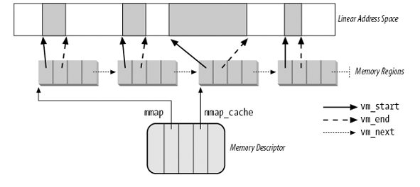

Linux Kernel: Memory
Table of Contents
1 Linux Kernel: Memory
1.1 内存定址
内存定址 (memory addressing) 是指如何实现虚拟地址与物理地址的转换.
1.1.1 分段
分段 (segmentation) 是早期 x86 采用的内存定址方式
1.1.1.1 实模式
实模式 (real mode) 下, 各个段寄存器保存的是段基址
1.1.1.2 保护模式
在保护模式 (protected mode) 下, 各个段寄存器中保存的不再是段的基址: 每个段寄存器共 16 位1 , 其中高 13 位是一个索引, 指向 GDT (Global Descriptor Table) 或 LDT (Local Descriptor Table) 表中的某一项 segment descriptor.
对于 cs 寄存器, 它的低两位称为 CPL (Current Privilege Level), cs 的 CPL 位始终与 CPU 当时的 privilege level (ring) 是一致的(参考 ). 若当前处于 kernel mode, 则 CPU 为 ring 0, cs 的 CPL 也为 0, 若当前处于 user mode, 则 CPU 的 ring 和 cs 的 CPL 都为 3
保护模式与实模式的切换是通过 cr0 寄存器来完成, 显然这个切换模式的指令在保护模式下必须在 ring 0 时才能进行
1.1.1.3 段描述符
每个段描述符 (segment descriptor) 大小为 8 bytes, 它主要的结构:
base
32 bit 的段基址
limit
20 bit 的 limit
G
1 bit 的 granularity 标记, 若 clear, 则上面的 limit 单位为 byte, limit 最大可以表示 1MB, 若 set, 则 limit 单位为 4K, limit 最大表示 4G
DPL
2 bit 的 descriptor privilege level, 它的作用在后面的 memory 的保护 部分会描述
对 linux 来说, 所有的 segment descriptor:
- base 都是 0
- G 都置位
- limit 都为 0xfffff
所以 logical address (最原始的地址) 与 linear address (被 segment unit 映射过的地址) 是一样的, 所以对 linux 来说, 使用 segmentation 主要的用处是实现 segmentation protection
1.1.1.4 基于分段的保护
基于分段的保护 (segmentation protection), 主要是指基于 CPL, DPL 的保护, 主要有几方面:
- memory 的保护
由于 linux 主要依赖 paging 来保护内存, 所以 segmentation 对内存的保护不好体现. 假设存在某种依赖 segmentation 保护内存的 OS, 它的 gtd 表中有几个 segment descriptor, 其中 segment A 通过 base+limit 指定了一个内存区域是设计给 user space 使用的 (DPL = 3), segment B 指定了另一个内存区域给 kernel 使用 (DPL = 0)
假设 user space 的进程想非法访问 segment B 指定的那块内存区域, 则它可能会通过 mov 指令修改 ss 或 ds 的值, 使 ss 或 ds 指定 segment B, 但由于 segmentation protection 的存在, 这个指令并不能成功: CPU 会在执行 mov 时会检测于 cs 的 CPL (3) 大于 segment B 的 DPL (0), 从而触发 exception.
似乎有一个问题: user space 直接在 GDT 里加一项 DPL 为 3 的 segment descriptor 不就可以通过个 segment 访问任意内存了么? GDT 所在的内存区域显然不是 ring 3 可以访问的…
- 指令的保护
有些指令限制了只有 ring 0 才可以使用, 或者限制了只有 ring 0 才能在某些指令中使用特定的操作数.
例如, cr0 寄存器的值关系到是否开启 segmentation 和 paging, 以及实模式与保护模式的切换, 所以 mov 指令想修改 cr0 时需要是 ring 0 才行.
- interrupt 处理
interrupt, trap, syscall 都是通过同一个 idt (中断向量表) 处理的, 例如 page fault 这个 interrupt 在 idt_table 中对应的 index 为 14, 那么 ring 3 是否可以通过 int 14 来模拟一个 page fault?
显然不可以, CPU 在执行 int 指令时, 会检查 CPL 与 interrupt descriptor 的 DPL 是否一致. 实际上, 在 idt_table 中, 只有 system gate (set_system_gate, 0x80) 和 system interrupt gate (set_system_intr_gate, 0x3) 两项可以被 ring 3 的 int 指令调用
因为 int 指令可以指定任意 idt index, 所以每个 int 指令都需要去检查 CPL 与 DPL. 但 int 通常都是用来实现 syscall 的, x86 又提供两个不需要检查 DPL 的 `int 0x80` 指令: sysenter, syscall (参考 )
- See also
1.1.2 分页
分页 (paging) 是另一种内存定址的方式, 由于它功能更强, 已经代替了上面提到的分段的方式, 但如前面 保护模式 所述, linux 还是会使用分段提供的保护模式等和安全相关的功能. 但是不会使用分段机制提供的地址翻译相关的功能 (例如所有段描述符中的 base 都为 0)
1.1.2.1 Overview
Paging unit 的作用:
- 将 linear address 映射为 physical address
- 检查是否有权限访问 linear address2
paging unit 将物理内存划分为连续的定长 (一般为 4K) 的 page frame (或者叫 physical page). page frame 就是一块固定大小的连续物理内存.
与 page frame 对应的是 page 结构体 (struct page), struct page 是一个结构体, 与 page frame (已分配的) 有一一对应关系. struct page 本身, 做为一个变量, 必定是保存在某个 page frame 中, 但这个 page frame 与 struct page "管理" 的那个 page frame 并没有任何关系
1.1.2.2 Paging
i386 使用 cr3 保存 Page Directory Table 的物理地址.
i386 的 linear address 为 32 位, page frame 大小为 4K (12 位).
32 位的 linear address 的高 10 位做为 page directory 中的 index, 因为 page directory 本身占用一个 page frame (4K), 每个 page directory entry 占用 4B (32 位物理地址), 所以一个 page directory 刚好能存放 1024 (2^10) 个 PTE. 这里 page directory 划分为 10 位, 根本的原因是 4K 的 page frame, 每个 entry 大小为 32 位, 最多只能容纳 2^10 个 entry
后 10 位做为 page table 中的 index
使用前 20 定位到 page table 中的某一个 page frame 的地址后, 加上剩下的 12 位就是最终的物理地址.
由于 page frame 的地址是 4K 对齐的, 所以 page directory entry 和 page table entry 只需要 20 位就可以表示, 但 page directory entry 和 page table entry 都是用 32 位表示, 所以它们的低 12 位实际是空闲的, 可以用来表示一些和 page frame 相关的的额外信息, 比如权限. 这 12 位空闲比特构成了 page directory/table entry 的 flag
1.1.2.3 page directory/table entry 的 flag
Present
表示 page entry 是否映射了一个 page frame. 若进行地址转换时解析到某个 entry 的 Present 为 0, 则会触发 Page Fault.
Accessed
Paging unit 每次进行地址转换时都会将涉及到的 page frame 的 Accessed 置位. kernel 会读取这些标记, 比如选择 page frame 进行 swapped out 的动作时. 另外, CPU 只负责置位, 不会主动对它们复位, kernel 会负责进行复位
Dirty
与 Accessed 类似, 但只针对 PTE. CPU 每次对 page frame 的写操作都会将相应的 PTE 的 Dirty 置位
Read/Write
是否可读或可读写. 若 flag 为 0, 表示可读, flag 为 1, 表示可读写
User/Supervisor
privilege level require to access the page frame, 若 flag 为 0, 则类似于 DPL 为 0, 若 flag 为 1, 则相当于 DPL 为 3
1.1.2.4 Process page table 初始化
一般情况下每个进程有不同的页表, 即 PGD (Page Global Directory) 不同3, 这个页表的 0~0xc0000000(3GB) 的部分是 user space 可以访问的, 0xc0000000~0xffffffff 是只有 kernel 可以访问4
进程页表是 fork 时分配的, 并且会复制父进程的页表
- do_fork
do_fork: copy_process() copy_mm() if (clone_flags & CLONE_VM): tsk->mm = oldmm; return mm = allocate_mm(); memcpy(mm, oldmm, sizeof(*mm)); mm_init() // 1. 分配 pgd mm_alloc_pgd() dup_mmap(mm, oldmm); // 2. 复制父进程页表 copy_page_range(mm, current->mm, tmp); copy_pud_range copy_pmd_range copy_pte_range copy_one_pte tsk->mm = mm;
需要注意的是, dump_mmap 复制由 vma 控制的区域的页表项, 即 3G 以下的部分, 3G 以上的部分的复制由 mm_alloc_pgd 间接完成 Kernel page table 与 process page table 的同步
- Copy On Write
copy_one_pte 只是复制 PTE: 新旧两个 pte 值相同, 指向同一个 page frame, copy_one_pte 会处理 COW 的情况
copy_one_pte: if ((vm_flags & (VM_SHARED | VM_MAYWRITE)) == VM_MAYWRITE): // 父进程的 pte 都设为只读并复制到子进程的页表, 后续任何一方修改 // 相应的 page frame, 都会触发 page fault ptep_set_wrprotect(src_pte); do_page_fault: vma = find_vma(mm, address); switch (error_code & 3) { // 3 表示写操作, 且 pte 是 present case 3: // 表示 fault address 对应的 vma 有写权限 if (vma->vm_flags & VM_WRITE): write = 1; break handle_mm_fault(mm, vma, address, write) if (write_access && pte_present(entry)): if (!pte_write(entry)): // wp 指 write-protected do_wp_page(mm, vma, address, pte, pmd, entry); // 若 page count 为 1, 将 pte 设为写可, 以便共享 pte 的最后一个进程不会再 page fault reuse = can_share_swap_page(old_page) if reuse: pte_mkwrite(pte); // 分配一个新的 page 并复制旧的 page new_page = alloc_page_vma(GFP_HIGHUSER, vma, address); copy_user_highpage(new_page, old_page, address); break_cow(vma, new_page, address, page_table); entry = maybe_mkwrite(pte_mkdirty(mk_pte(new_page, vma->vm_page_prot)), vma); ptep_establish(vma, address, page_table, entry); // 设置新的页表 set_pte_atomic(__ptep, __entry);
父子两个进程的页表的 pte 都设为只读, 后续任何一方修改相应的 page frame, 都会触发 page fault, 从而分配新的 page frame
1.1.2.5 Kernel page table 初始化
kernel page table 是 kernel 使用的 page table, 这个 table 的地址保存在 swapper_pg_dir (linear address) 中.
kernel 页表的布局大约是这样的:
0 3G 3G+896M 4095M 4G
+------------------------------+-----------+-----------+-------------+-------+--+
| | physical | vmalloc | perm kmaps | fixed | |
+------------------------------+-----------+-----------+-------------+-------+--+
896M ~124M 4M ~100 K
- pagetable_init
paging_init: pagetable_init(); load_cr3(swapper_pg_dir); asm volatile("movl %0,%%cr3": :"r" (__pa(pgdir))) kmap_init(); pagetable_init: pgd_t *pgd_base = swapper_pg_dir; // 1. 前 896M 物理内存直接映射于 3G~3G+896M 的虚拟地址 kernel_physical_mapping_init(pgd_base); // 2. fixed_addresses 部分的映射, 这部分映射的虚拟地址范围是 4095M 之 // 前的几十个 page, 这里的 vaddr 实际就是 4095M, 这里看起来指定的是 // 一个结束地址而非起始地址? 实际上, 后面的 page_table_range_init 要 // 根据 vaddr 操作相应的 PGD entry, 4092M~4096M 范围都落在同一个 PGD // entry 上 vaddr = __fix_to_virt(__end_of_fixed_addresses - 1) & PMD_MASK; // pagetable_init 只负责初始化相应的 page table: page table 中 PTE 的值 // 由后续的 set_fixmap 及 kmap_atomic 设置 page_table_range_init(vaddr, 0, pgd_base); // 3. KMAP 部分的映射 permanent_kmaps_init(pgd_base);
- kernel_physical_mapping_init
kernel_physical_mapping_init: // PAGE_OFFSET 为 0xc0000000 pgd_index 为 0xc0000000 对应的 pgd 中的 // 索引, 即 768 pgd_idx = pgd_index(PAGE_OFFSET); pgd = pgd_base + pgd_idx; pfn = 0; // PTRS_PER_PGD 为 1024 for (; pgd_idx < PTRS_PER_PGD; pgd++, pgd_idx++): // 以 32 bit paging (10-10-12 两级映射) 为例, pmd 与 pgd 是一样的, // 且 PTRS_PER_PMD 为 1 , 所以后面两行代码可以忽略 /* pmd = one_md_table_init(pgd); */ /* for (pmd_idx = 0; pmd_idx < PTRS_PER_PMD && pfn < max_low_pfn; pmd++, pmd_idx++): */ pte = one_page_table_init(pgd); // 分配一个 page table, 并插入到 PMD (对于 32 bit, 实际就是插入到 PGD) 中相应的位置 pte_t *page_table = (pte_t *) alloc_bootmem_low_pages(PAGE_SIZE); set_pmd(pmd, __pmd(__pa(page_table) | _PAGE_TABLE)); // 对 page table 中每一项设置一个 pte, PTRS_PER_PTE 为 1024 for (pte_ofs = 0; pte_ofs < PTRS_PER_PTE && pfn < max_low_pfn; pte++, pfn++, pte_ofs++): set_pte(pte, pfn_pte(pfn, PAGE_KERNEL)); // pfn 是 page frame number, pfn 左移 12 位即是它 // 对应的 page frame 的物理地址 __pte(((pfn) << PAGE_SHIFT) | pgprot_val(prot))
- page_table_range_init
page_table_range_init(vaddr, end, pgd_base); // page_table_range_init 只负责初始化 PGD 中相应的 page table, 至于 // page table 中 PTE 的赋值它并不处理 pgd_idx = pgd_index(vaddr); pgd = pgd_base + pgd_idx; for ( ; (pgd_idx < PTRS_PER_PGD) && (vaddr != end); pgd++, pgd_idx++): one_page_table_init(pgd); vaddr += 1<<22
- permanent_kmaps_init
permanent_kmaps_init(pgd_base): // permanent_kmaps 的虚拟地址范围是 fixed_addresses 前的 4MB 的范围, // 所以 PKMAP_BASE 大约是 4090M 左右 vaddr = PKMAP_BASE; page_table_range_init(vaddr, vaddr + PAGE_SIZE*LAST_PKMAP, pgd_base);
1.1.2.6 Kernel page table 与 process page table 的同步
kernel page table (swapper_pg_dir) 大部分情况5只是 process page table 的参考, 而不会被直接使用 (load 到 cr3). 在中断或 syscall 时, kernel contrl path 都是使用被中断打断或发起 syscall 的进程的 process page table.
这是因为 syscall 时 kernel 通常需要访问进程自己的内存, 以 read 为例, kernel 需要将读到的数据写入到进程自己的地址空间的某个 buffer 中去, 因为 kernel 需要同时能访问到 process 和 kernel 的页表, 所以实现的方法是: 发起 syscall 时 kernel 使用 process page table, 并且保证 process page table 的 3G 以上的部分与 kernel page table 是一致的, 如何做到一致?
- 固定映射的部分 (ZONE_DMA+ZONE_NORMAL)
do_fork 时已经提到了 mm_alloc_pgd, 但这个函数并不是简单的分配一个 pgd:
mm_alloc_pgd 是通过 slab 去分配 pgd 的, 而 slab 支持在分配某个 object 时指定一个 ctor, 分配完这个 object 后 slab 会自动执行这个 ctor.
pgtable_cache_init 时指定了一个叫做 pgd_ctor 的函数:
pgd_ctor: // USER_PTRS_PER_PGD 表示 PGD 表中的 1024 个表项有多少映射的 3G 以下 // 实际上在 32 位系统上这个值为 768 (1024 * 3 /4) // 所以下面两行的作用是: // 1. 将 pgd 前 3g 的部分置 0 // 2. 将 pgd 后 1g 的部分用 swapper_pg_dir 后 1g 的数据覆盖 memcpy((pgd_t *)pgd + USER_PTRS_PER_PGD, swapper_pg_dir + USER_PTRS_PER_PGD, (PTRS_PER_PGD - USER_PTRS_PER_PGD) * sizeof(pgd_t)); memset(pgd, 0, USER_PTRS_PER_PGD*sizeof(pgd_t));
通过 pgd_ctor, 可以确保每个 process page table 3G~4G 的部分与 swapper_pg_dir 是一致的
- 动态映射的部分 (ZONE_HIGHMEM)
但 swapper_pg_dir 后面 1g 的部分并不是一直固定不变的, 3G~3G+896M 的部分是固定映射, 不会改变, 但 896M 之后的部分 (ZONE_HIGHMEM), 是通过 kmap 和 vmalloc 动态映射的, 前面通过 pgd_ctor 一次性的复制无法应对 kmap, vmalloc 这种情况.
理论上, kmap/vmalloc 需要同时修改 kernel page table 和所有的 process page table, 但实际上, kernel 采用了一种 lazy 的处理方式:
kmap/vmalloc 时 kernel 只修改 swapper_pg_dir, 当用户进程进入到 kernel 并需要访问这个区域上, 会发生 page fault, 因为 pgd entry 或 pt entry 为 null. 这时 do_page_fault 会检查 fault address 是否位于 swapper_pg_dir 的 kmap/vmalloc 区域 (vmalloc_fault), 如果是, 则根据 swapper_pg_dir 修改 process page table.
当 vfree 时, swapper_pg_dir 中相应的 PTE 被置 null, 这样后续通过 process page table 访问之前那个 kmap/vmalloc 区域时, 会再次发生 page fault, 但此时就不是 vmalloc_fault 了
1.1.2.7 页表的切换
1.2 内存管理
1.2.1 Page Descriptor
struct page { // PG_dirty, PG_private, PG_uptodate 等另外, page 所属的 zone 信息 // 放包含在 flag 中 (memmap_init_zone) page_flags_t flags; unsigned long private; // page 与 inode 的 page cache 关联 struct address_space *mapping; // page 在 mapping 中的 index pgoff_t index; // lru 根据 page 的状态和用法有多种用途: // 1. 当 page free 时, 和 buddy system 有关 (zone->free_area) // 2. 当 page 用做 slab 相关时, 和 slab 有关 // 3. 当 page 正在被 user mode 或 page cache 使用时, // 和 PFRA 有关 (zone->active_list, zone->inactive_list) // // lru 的名字取的是第三种情况 struct list_head lru; // ... }
每个 page 结构体的大小为 32 字节, 而且每个 page 结构体与 4K 的 page frame 有一一对应关系.
1.2.1.1 mem_map
paging_init 时会针对每一个 page frame 都生成一个 page struct, 并会把这些 page struct 按 pfn 的顺序依次保存在 mem_map 数组中. 具体代码在 memmap_init_zone 中.
由于每个 page struct 大小为 32B, 所以 mem_map 本身会占用的物理内存大小不到总内存的 1% (32/4K)
由于 mem_map 数组的存在, pfn_to_page 与 page_to_pfn 的实现就非常直接了.
pfn_to_page: mem_map + (pfn)
page_to_pfn: (page) - mem_map
1.2.2 Memory Zones
kernel 将所有物理内存分为三个 zone:
ZONE_DMA
管理低于 16M 的 page frame
ZONE_NORMAL
管理 16M ~ 896M 的 page frame
ZONE_HIGHMEM
896M 以上的 page frame
由于硬件的限制, 旧式 ISA 设备的 DMA 只能使用 ZONE_DMA 中的 page frame.
ZONE_DMA 和 ZONE_NORMAL 中的 page frame 可以被 physical mapping
ZONE_HIGHMEM 中的 page frame 无法被 physical mapping (Mapping High memory )
Non-contiguous Mapping
vmalloc
Permanent Kmap
kmap
- Fixed Mapping
- kmap_atomic
- set_fixmap
1.2.3 Zone Allocator
所有的 page frame 最终都是通过 zone allocator 来分配, 通过 zone allocator 可以分配多个物理连续的 page frame. zone allocator 可以根据情况 (GFP Mask 及各个 zone 剩余内存的情况) 选择在哪个 zone 中分配, 最后, 各个 zone 自己的 buddy allocator 会负责最终的分配.
分配 page frame 实际就是分配一个可用的 page struct, 因为 page struct 与 page frame 是一一对应的, 而且可能通过 pfn_to_page, page_to_pfn 方便的转换.
分配只是分配一个可用的 page struct, 一般这个 page struct 需要通过映射后才能使用, 根据 page struct 所属的 zone, 需要使用不同的映射方法来完成映射.
1.2.3.1 相关的分配函数
- alloc_pages(gfp_mask, order)
分配 2^order 个连续的 page frame, 返回第个 page struct 的地址. gfp_mask 中的 gfp 代表 "get_free_page". Zone allocator 会根据 gfp_mask 选择合适的 zone 来分配
alloc_pages 主要逻辑:
- 判断各个 zone 内存的使用情况
- 根据各个 zone 的内存情况及 gfp_mask 选择合适的 zone 去分配内存
- 选择一个可用内存大于 zone->pages_low 的 zone 去分配, pages_low 的值是 pages_min * 5 / 4
- 若所有 zone 的可用内存都小于 zone->pages_low, 则唤醒 kswapd 异步的回收内存
- 选择一个可用内存大于 zone->pages_min 的 zone 去分配, pages_min 的值和 /proc/sys/vm/min_free_kbytes 有关
- 若所有 zone 的可用内存都小于 zone->pages_min, 则通过 try_to_free_pages 同步回收内存
- 若所有 zone 都无法分配内存
- out_of_memory 会通过 oom killer 杀掉某个 victim 进程以释放内存
具体参考 页面回收
- alloc_page(gfp_mask)
即 alloc_page(gfp_mask, 0)
- __get_free_pages(gfp_mask, order)
与 alloc_pages 类似, 但它将第一个 page struct 映射为线性地址后返回
__get_free_pages: page = alloc_pages(gfp_mask, order); if (!page): return 0; return page_address(page); if (!PageHighMem(page)) return lowmem_page_address(page); __va(page_to_pfn(page) << PAGE_SHIFT); else: // 检查 page_address_map, 由于 page_address_map 只与 kmap 有关, // 所以在 __get_free_pages 时, page 并没有事先通过 kmap 在 // page_address_map 有记录, 所以这里必然会找不到, 导致返回线性地 // 址为 NULL, 所以 __get_free_pages 不应该使用 __GFP_HIGHMEM 来 // 分配
- __get_free_page(gfp_mask)
1.2.3.2 GFP Mask
__GFP_DMA
必须从 ZONE_DMA 分配
__GFP_HIGH
允许使用 zone 的 reserved page frames
__GFP_HIGHMEM
可以从 ZONE_HIGHMEM 分配
__GFP_WAIT
允许分配动作被阻塞以便等待释放内存
__GFP_IO
允许做 IO 以释放内存
GFP_KERNEL / GFP_USER
__GFP_WAIT | __GFP_IO | __GFP_F'S
即:
- 可以阻塞
- 可以做 IO 以释放内存
- 不可以使用 ZONE_HIGHMEM
GFP_HIGHUSER
GFP_USER | __GFP_HIGHMEM
GFP_ATOMIC
__GFP_HIGH
在这些 GFP mask 中, __GFP_DMA 和 __GFP_HIGHMEM 会影响分配内存时选择 zone 的顺序:
- 若指定了 __GFP_DMA, 则只能从 ZONE_DMA 中分配
- 若指定了 __GFP_HIGHMEM, 则选择 zone 的顺序为 ZONE_HIGHMEM, ZONE_NORMAL, ZONE_DMA
- 若没有指定 __GFP_HIGHMEM, 则选择的顺序为 ZONE_NORMAL, ZONE_DMA
1.2.4 Physical Mapping
ZONE_DMA 和 ZONE_NORMAL 中的 page frame 可以通过 physical mapping 直接映射, 所谓 physical mapping, 是指 0~896M 范围的物理内存直接映射到 3G~3G+896M 的线性地址空间. 前面 Kernel page table 与 process page table 的同步 及 kernel_physical_mapping_init 已经提到了这部分 mapping 建立的过程.
由于这部分映射是线性的, 所以可以方便的进行物理地址与线性地址的转换
1.2.4.1 _va
#define __va(x) ((void *)((unsigned long)(x)+PAGE_OFFSET))
1.2.4.2 _pa
#define __pa(x) ((unsigned long)(x)-PAGE_OFFSET)
1.2.5 Mapping High memory
ZONE_HIGHMEM 中的 page frame 无法被 physical mapping, 必须通过以下几种途径之一映射过才能访问:
Non-contiguous Mapping
vmalloc
Permanent Kmap
kmap_high
- Fixed Mapping
- kmap_atomic
- set_fixmap
1.2.5.1 Permanent Kmap
Permanent Kmap 维护 kernel page map 中一段 page table 的映射, LAST_PKMAP 决定了这段映射大小: 一般 LAST_PKMAP 为 1024, 则 Permanent Kmap 刚好维护一个 PGD entry, 即 4M 虚拟地址范围
Permanent Kmap 内部维护一个数组 pkmap_count[LAST_PKMAP], 分配映射, 释放映射, 查找映射都是通过对这个数组的线程查找完成的.
分配: kmap
kmap: if (!PageHighMem(page)): return page_address(page); return kmap_high(page); // 查找, 看这个 page 之前是否已经映射过 vaddr = (unsigned long)page_address(page); if (!vaddr) // 真正的分配动作, 查找 pkmap_count 中某一个空的 slot vaddr = map_new_virtual(page); pkmap_count[PKMAP_NR(vaddr)]++; return vaddr map_new_virtual: for (;;): // 描述 pkmap_count 中所有的项, 找一个 pkmap_count[x] 为 0 的 last_pkmap_nr = (last_pkmap_nr + 1) & LAST_PKMAP_MASK; // ... vaddr = PKMAP_ADDR(last_pkmap_nr); // permanent_kmaps_init 时将 pkmap_page_table 设置了 // swapper_pg_dir 中对应的部分, 所以 kmap 修改的是 swapper_pg_dir set_pte(&(pkmap_page_table[last_pkmap_nr]), mk_pte(page, kmap_prot)); pkmap_count[last_pkmap_nr] = 1; // set_page_address 会修改 page_address_map 这个 list, 记录 page 与 // vaddr 的映射关系, 后面 page_address 会使用它 set_page_address(page, (void *)vaddr); return vaddr;
释放: kunmap
kunmap: if (!PageHighMem(page)): return; kunmap_high(page); vaddr = (unsigned long)page_address(page); nr = PKMAP_NR(vaddr); --pkmap_count[nr]
查找: page_address
page_address: if (!PageHighMem(page)) return lowmem_page_address(page); if (!list_empty(&pas->lh)): struct page_address_map *pam; list_for_each_entry(pam, &pas->lh, list): if (pam->page == page): ret = pam->virtual; goto done;
Permanent Kmap 支持通过 page 查找其线性地址, 主要的依靠 page_address_map, 之前 map_new_virtual 时会使用这个 page_address_map 记录 page 与 vaddr 的映射关系.
除了 Permanent Kmap 和 Physical Mapping, 其它的映射方式 (vmalloc, fix mapping) 无法根据 page 直接查找到其 vaddr (当然通过遍历还是可以查到的…)
1.2.6 Buddy System
1.2.6.1 Buddy system 的基本原理
- buddy system 用来快速分配连续的 page frame
- 它的主要目的是减少外部碎片
- 每个 zone 都有一个 buddy system, 管理着这个 zone 所有的 page frame (或者说 page struct)
buddy system 将它管理的所有 page 分为 MAX_ORDER (0 ~ 10 共 11 ) 个 free_area, 每个 area 维护着一个链表, 链表中的每一项代表着 "连续的 2^n 个 page" 构成的 block,并且这个 block 的第一个 page 的 pfn 是 2^n 对齐的. 所以 buddy system 能分配的最大连续内存是 4M
- 当需要分配连续 2^n 个 page 时, buddy system 会:
- 查看对应 area n 是否有空闲的 block
- 如果有则使用这个空闲的 block
- 否则, 查看 area n+1 是否有空闲的 block
- 如果有, 则将这个空闲 block 拆为两个 2^n 大小 的 block, 返回一个, 另一个加入到 area n.
- 如果 area n+1 也没有空闲的 block, 则查看 area n+2 … 以此类推
- 当释放一个 block 时, 把这个 block 插入到相应的 area, 然后看这个
block 能否与前后的 block 合并, 合并的条件是:
- 两个 block 大小相等
- 两个 block 物理连续
- 第一个 block 的第一个 page 的 pfn 相对于合并后的 area n 是 2^n 对齐的
1.2.6.2 相关数据结构
- zone
struct zone 维护了许多和 buddy system 相关的信息
struct zone { unsigned long free_pages; // MAX_ORDER 为 11, free_area[i] 代表的是大小为 2^i 的 block 的集合 struct free_area free_area[MAX_ORDER]; // zone_mem_map 是 mem_map 中与 zone 对应的的部分 struct page *zone_mem_map; }
- free_area
struct free_area { // free_list 是一个由 page 构成的 list, list 中的 page 是大小为 2^n // 的 block 的第一个 page struct list_head free_list; unsigned long nr_free; }
- page
struct page { // 与 free_area 中的 free_list 对应 struct list_head lru; // buddy system 中 block 的第一个 page 通过 private 保存着 block // 对应的 order. unsigned long private; }
1.2.6.3 Allocating a block
struct page *__rmqueue(struct zone *zone, unsigned int order): for (current_order = order; current_order < MAX_ORDER; ++current_order): area = zone->free_area + current_order; if (list_empty(&area->free_list)) continue; page = list_entry(area->free_list.next, struct page, lru); list_del(&page->lru); rmv_page_order(page); area->nr_free--; zone->free_pages -= 1UL << order; return expand(zone, page, order, current_order, area); static inline struct page * expand(struct zone *zone, struct page *page, int low, int high, struct free_area *area): // low 表示最初的原始 order, high 指最终实际的 order. expand 的作用 // 是将 order 为 high 的 block 拆分, 将多余的部分合并到其它的 area 中 // 下面假设 low = 0, high = 2, 即要分配 1 个 page, 最终在 free_area[2] 中找到 // 一个 4-page 的 block, expand 的结果应该是: // 1. 把一个 1 page 的 block 插入 free_area[0] // 2. 把一个 2 page 的 block 插入 free_area[1] // size = 1<<2 = 4, 表示最初一共分配了 4 个 page unsigned long size = 1 << high; while (high > low): // area 初始为 area[2] area--; high--; // 循环两次, 第一次 size 为 2, 则 page[2] 代表的 block // (page[2],page[3]) 被插入到 area[1], 第二次 size 为 1, 则 // page[1] 代表的 block 被插入到 area[0] size >>= 1; list_add(&page[size].lru, &area->free_list); area->nr_free++; set_page_order(&page[size], high); page->private = order; return page;
1.2.6.4 Freeing a block
void __free_pages_bulk (struct page *page, struct page *base,struct zone *zone, unsigned int order): // page 是要释放的 block 的第一个 page // base 是 zone 的 zone_mem_map // zone 是 block 所属的 zone // order 是 block 的 order // // 假设要释放的 block 的 order 为 2, page_index 为 8 (8 是 2^2 对齐 // 的), 且 page 与后面一个 block 能合并为一个 order 为 3 的 block, 后面一个 block // 的 page_index 应该是 12 page_idx = page - base; zone->free_pages += 1<<order; while (order < MAX_ORDER-1): struct page *buddy; int buddy_idx; // iter 1: buddy_index = 8 ^ 1<<2 = 12, ^ 操作会把 page_index +/- // 一个 2^order 大小 // iter 2: buddy_index = 8 ^ 1<<3 = 0, 若 page 0 代表一个空闲的 3 阶 block, 则 // 还可以进一步合并 // iter 3: buddy_index = 0 ^ 1<<4 = 16, ... // 这里的异或操作和对齐的要求有关: 当前 block 肯定是 2^order 对齐的, 如果和后面的 block 合并 // 需要保证当前 block 也是 2^(order+1) 对齐的, 如果和前一个 block 合并, 需要保证前一个 block 是 // 2^(order+1) 对齐的. // // 用语言描述这个取 buddy_idx 的操作: // 1. page_index 的低 order 位必然 0 // 2. 若 page_index 的低 order+1 位也是 0, 则它已经是 2^(order+1) 对齐了, // 把 page_index 加上 2^order 得到 buddy_idx // 3. 若 page_index 的低 order+1 位是 1, 则它本身无法与 2^(order+1)对齐, // 把 page_index 减去 2^order 得于 buddy_idx, 可以确定这个 buddy_idx // 必然是 2^(order+1) 对齐的 // // 一个异或操作就可以解决这个问题... buddy_idx = (page_idx ^ (1 << order)); buddy = base + buddy_idx; // page_is_buddy 表示 page 是否是一个空闲 block 的起始 page if (page_is_buddy(buddy, order)): // 将 buddy 从原来的 area 删除 list_del(&buddy->lru); area = zone->free_area + order; area->nr_free--; // iter1: page_index = 8 & 12 = 8 // iter2: page_index = 8 & 0 = 0 page_idx &= buddy_idx; order++; // coalesced 和 order 是最终合并的结果 coalesced = base + page_idx; set_page_order(coalesced, order); list_add(&coalesced->lru, &zone->free_area[order].free_list); zone->free_area[order].nr_free++;
1.2.6.5 Buddy system 初始化
- 初始化所有的 free_area 为空
setup_arch: paging_init zone_sizes_init free_area_init free_area_init_node free_area_init_core zone_init_free_lists for (order = 0; order < MAX_ORDER ; order++): INIT_LIST_HEAD(&zone->free_area[order].free_list); zone->free_area[order].nr_free = 0;
- 释放 bootmem 到 buddy system
start_kernel: mm_init mem_init free_all_bootmem free_all_bootmem_core __free_pages
1.2.7 Slab Allocator
1.2.7.1 Slab 基本原理
- Buddy System 以 page 为单位来分配内存, 如果用 Buddy System 来分配一个只需要几十 KB 的 buffer 的话, 使用 Buddy System 会造成严重的内部碎片.
- kernel 会频繁的分配和释放某些相同的数据结构, 例如 task_struct, mm_struct 等, 通过维护一个针对这些常用数据结构的对象缓存, 可以大大提高分配与释放的效率 (当然会占用更多的内存), 并避免多次的初始化.
- 通过 Slab Colouring 组织不同 Slab 中对象的地址, 尽量使得这些对象在使用时能分布在不同的硬件 cache line 上.
- 除了缓存 task_struct 等这种数据结构, 大小为 32B, 64B, … 128KB 的一些通用内存区域 (kmalloc) 也会通过 Slab 缓存起来.
1.2.7.2 相关数据结构
- kmem_cache_t
kmem_cache_t (或 struct kmem_cache_s) 是 Slab 最上层的结构, 代表一种对象的缓存, 例如 task_struct, mm_struct 各自会有一个对应的 kmem_cache_t, 另外, /proc/slabinfo 中每一行都对应着一个 kmem_cache_t
struct kmem_cache_s { // free objects 的最大数目, 即 cache 多少个 free objects unsigned int limit; // 单个对象的大小, 它的值可能会大于对象真正的大小, 因为需要考虑对齐 unsigned int objsize; // 每个 slab 有多少个对象 unsigned int num; // 每个 slab 需要占用 2^gfporder 个 page unsigned int gfporder; unsigned int gfpflags; // slab colouring 相关 // colour 是这个 cache 的 slab 能使用的 colour 的范围 (0~colour) // // colour_off 是 colour 对应的偏移量 (若某个 slab 的 colour 为 i, // 则这个 slab 开头的偏移量为 i*colour_off), 具体参考 kmem_cache_alloc, // 一般 colour_off 为 cache line 的大小, 例如 32B size_t colour; unsigned int colour_off; // slab_size 是指 slab 中 slab descriptor 与 kmem_bufctl_t 数组的大小之和 unsigned int slab_size; // ctor 与 dtor void (*ctor)(void *, kmem_cache_t *, unsigned long); void (*dtor)(void *, kmem_cache_t *, unsigned long); const char *name; // slabs_partial 中同时有 free 与 nonfree 的 object struct list_head slabs_partial; // slabs_full 中所有 object 都是 nonfree struct list_head slabs_full; // slabs_free 中所有 object 都是 free struct list_head slabs_free; }
- slab
slab 代表了一些 object 的集合, 它也代表一个或多个 (gfporder 有关) page.
上面图展示了 slab descriptor, kmem_bufctl_t 数组及 slab 的 objects 的布局
确切的说这只是 slab 结构中的 "slab with internal descriptor" 一种 (IN_SLAB), 即 slab descriptor 与 object 是放在同一个 page. 如果 object 很大, 例如几 K, 则会使用另一布局 "slab with external descriptor" (OFF_SLAB), 此处暂不讨论.
其中 free 及 kmem_bufctl_t 数组中的箭头指向相应的 Free Object, 实际上这个箭头是通过 free 和 kmem_bufctl_t 下标推算出来的 (slabp->s_mem + slabp->free*cachep->objsize) … 并不是直接的指针, 具体见 kmem_cache_alloc
struct slab { // slab 所属的 kmem_cache_t 的 slabs_partial, slabs_full, // slabs_free 中的某一个 struct list_head list; // page + colouroff = s_mem unsigned long colouroff; // slab 管理的 objects 的首地址 void *s_mem; // slab 中 nonfree 的 object 个数, 若 inuse == kmem_cache_t.num, // 表示这个 slab 已经没有 free 的 object unsigned int inuse; // 一个 slab 包含多个 object, 它的 free 是指这些 object 中第一个 // free 的 object 的下标(kmem_cache_t 实际上就是一个 short, 它就是 // 一个数组的下标) kmem_bufctl_t free; }
- kmem_bufctl_t 数组及 slab objects
kmem_bufctl_t 实际就是一个数组下标, 本身是 short 类型.
在 slab 开头紧接着 Slab descriptor 的位置是一个数组, 这个数组的大小取决于每个 slab 有多少个 object (即 kmem_cache_t 的 num).
这个数组与数组后面的 slab objects 区域是对应的, x[i] 指示的是下一个 free 的 object 在数组中的下标, 通过这个数组, 可以建立一个 slab 中 free objects 的链表.
slab->free 及 kmem_bufctl_t 的使用见 kmem_cache_alloc
- 总结
Slab 分为 cache, slab, object 三个层次.
- 每类对象对应一个 cache
- 每个 cache 有多个 slab, 这些 slab 根据每个 slab 中 free object 的个数分布在 slabs_partial, slabs_full, slabs_free 三条 slab 链表中.
- 每个 slab 通过一个或多个连续的 page 保存着多个 object 及 slab descriptor 本身以及一个 kmem_bufctl_t 数组, 这个数组用来维护 slab 内部的 free objects 链表
1.2.7.3 Allocating a Slab Object
- kmem_cache_alloc
void * kmem_cache_alloc (kmem_cache_t *cachep, int flags): // kmem_cache_alloc 时会一次分配 batchcount 个 object 到另一个 cache // (ac_data), 而不是仅分配一个 object, 所以 kmem_cache_alloc 会先检 // 查 ac_data 中是否有 object ac = ac_data(cachep); if (likely(ac->avail)): objp = ac_entry(ac)[--ac->avail]; else: // 调用 cache_alloc_refill 来 fill ac_data objp = cache_alloc_refill(cachep, flags); while (batchcount > 0): // 先尝试从 slabs_partial 分配, 若 slabs_partial 链表为空 // (slabs_partial.next == slabs_partial), 则尝试从 slabs_free 分配 // 若 slabs_free 也为空, 跳到 must_grow, 以分配一个新的 slab entry = l3->slabs_partial.next; if (entry == &l3->slabs_partial): entry = l3->slabs_free.next; if (entry == &l3->slabs_free): cache_grow(cachep, flags, -1); goto must_grow; // 这里找到一个 slabs 链表 slabp = list_entry(entry, struct slab, list); while (slabp->inuse < cachep->num && batchcount--): // alloc 的 object 最终会保存在 ac_data 中, slab->free 是 // slab 中第一个 free 的 object 的下标, s_mem 是 slab 中 // object 部分的首地址 ac_entry(ac)[ac->avail++] = slabp->s_mem + slabp->free*cachep->objsize; slabp->inuse++; // 通过 kmem_bufctl_t 数组找到 slab 中下一个 free 的 object next = slab_bufctl(slabp)[slabp->free]; slabp->free = next; // 调整 slab 过对应的 slab 链表 list_del(&slabp->list); if (slabp->free == BUFCTL_END): list_add(&slabp->list, &l3->slabs_full); else: list_add(&slabp->list, &l3->slabs_partial); // fall through to must_grow must_grow: // ac->avail 为 0, 表示没有分配任何一个 object, 则需要分配一个新的 slab if (unlikely(!ac->avail)): x = cache_grow(cachep, flags, -1); return ac_entry(ac)[--ac->avail];
- cache_grow
当 cache 没有任何 free 的 slab 时, 通过 cache_grow 分配一个 slab
void cache_grow (kmem_cache_t * cachep): // 计算 slab 的 colour // colour_next 表示新分配的 slab 应该使用的 colour offset = cachep->colour_next; // colour_next++, 若超过了 cachep->colour 指定的 colour 最 // 大值, 则回绕到 0 cachep->colour_next++; if (cachep->colour_next >= cachep->colour): cachep->colour_next = 0; // 最终的 offset 为 colour * cachep->colour_off offset *= cachep->colour_off; // 分配 page objp = kmem_getpages(cachep, flags, nodeid) page = alloc_pages(flags, cachep->gfporder); // 按 slab 的格式初始化这个 page (实际上就是生成 slab descriptor) // 其中 offset 是指根据 slab colouring 的结果, slab 的第一个对象的起始位置 slabp = alloc_slabmgmt(cachep, objp, offset, local_flags) // slab 开头的 offset 个字节被跳过 slabp = objp+offset; slabp->inuse = 0; offset += cachep->slab_size; slabp->colouroff = offset; // s_mem 即 slab 中第一个 object 的地址 slabp->s_mem = objp+offset; // set_slab_attr 将所有 page 都和 cachep 及 slabp "关联" 起来, // 所谓的"关联", 是指通过 page, 可以找到它属于哪个 cache 及哪个 slab, // 这些信息是必要的, 以 kmem_cache_free 为例, object 对应的 cache 在 kmem_cache_free // 的第一个参数中, 但它所谓的 slab 必须通过 set_slab_attr 建立的关联才能找到, // 另外, kfree 时只提供了一个 object 参数, 连 cache 都没有, 更需要 set_slab_attr // 建立的关联. // // set_slab_attr 如何建立 objp 与 cachep 及 slabp 的关联? 通过 page->lru.prev 及 // page->lru.next. // 因为此时 page 不属于 buddy 或 PFRA 管理, 所以其 lru 字段是可以自由使用的 set_slab_attr(cachep, slabp, objp); i = 1 << cachep->gfporder; page = virt_to_page(objp); do: SET_PAGE_CACHE(page, cachep); page->lru.next = cachep; SET_PAGE_SLAB(page, slabp); page->lru.prev = slabp; page++; while (--i); cache_init_objs(cachep, slabp, ctor_flags); for (i = 0; i < cachep->num; i++): void* objp = slabp->s_mem+cachep->objsize*i; // ctor 是在分配 slab 时就被调用了, 而不是在分配 object 时 if (cachep->ctor): cachep->ctor(objp, cachep, ctor_flags); // 初始化 kmem_bufctl_t 中数据为 x[i] = i+1 slab_bufctl(slabp)[i] = i+1; // slab 第一个 free 的 object 的下标初始是 0 slabp->free = 0; list_add_tail(&slabp->list, &(list3_data(cachep)->slabs_free)); list3_data(cachep)->free_objects += cachep->num;
1.2.7.5 kmalloc
kmalloc 建立在 slab 基础上, 除了通过 kmem_cache_create 创建的 specific cache 外, slab 内建了几个 generic cache, 又来支持 kmalloc. 通过一个 cache_sizes 数组, slab 维护了 object size 分别为 32, 64, … 128K 的几个 cache. kmalloc 时会根据 kmalloc 的需要的内存大小选择一个大小最接近的 cache 去分配
- kmalloc
static inline void *kmalloc(size_t size, int flags): return __kmalloc (size_t size, int flags) struct cache_sizes *csizep = malloc_sizes; for (; csizep->cs_size; csizep++): if (size > csizep->cs_size): continue; return __cache_alloc(csizep->cs_cachep, flags);
需要注意的是, __cache_alloc 时最终会通过 set_slab_attr 将 kmalloc 返回的 object 所在的 page 与相关的 cache 和 slab 关联起来, 后面在 kfree 时需要这些关联的 cache 和 slab.
- kfree
void kfree (const void *objp): cache = GET_PAGE_CACHE(virt_to_page(objp)); cache = pg->lru.next; __cache_free(cache, (void*)objp);
1.2.7.6 Slab Colouring
如 cache_grow 所示, 在分配 slab 时会在 slab 开头插入一段空白, 空白的大小由 cache 的 colour, colour_next 及 colour_offset 决定.
上图第一部分 col*aln 的部分即是插入的一段空白, 其中 col 即 cache_grow 时使用的 cache->colour_next, aln(align) 即 cache_grow 时使用的 cache->colour_offset (即 cache line size, 32B), 从 cache_grow 已经看到, cache->colour_next 在每次分配 slab 时加 1, 直到达到 cache->colour 这个最大值时回绕到 0, 现在的问题是, cache->colour 这个最大值是如何确定的? 显然这个值大了会浪费空间, 小了又起不到多少作用…
每个 slab 的大小是 page size 对齐的, 但 object 的大小是任意的, 假设这种情况:
slab 大小为 4K (占用一个 page), 假设 object 大小为 300B, slab descriptor 大小为 20B, 不考虑 object 对齐的情况下, 一个 slab 能容纳的 object 数为 (4096-20)/300 = 13, 则不考虑 colouring 的情况下, slab 的布局大约 (没有考虑 object align) 是:
- 20 B 的 slab descriptor
- 26 B 的 kmem_bufctl_t 数组 (13 个 object)
- 13 * 300 = 3900 B 的 objects
- 还剩余 150 B
剩余的 150B 是浪费的, 因为它无法容纳一个 object, 但 slab 可以利用这块空闲空间做 slab colouring:
因为 150 / 32 = 4.6, 所以 cache->colour = 5, cache->colour_offset = 32, 初始 cache->colour_next = 0, 假设后面连续分配了几个 slab:
- slab(0) 的 offset 为 0
- slab(1) 32
- slab(2) 64
- slab(3) 96
- slab(4) 128
- slab(5) 又回绕到 0
可见 slab(0) 到 slab(4) 的 offset 依次相差一个 cache line 的大小. 相对而言这些 slab 中的对象被 cache 到同一条 cache line 的可能性会小一些.
1.2.8 vmalloc
1.2.8.1 vm_struct
struct vm_struct { void *addr; unsigned long size; unsigned long flags; struct page **pages; unsigned int nr_pages; unsigned long phys_addr; struct vm_struct *next; };
1.2.8.2 vmalloc
void *vmalloc(unsigned long size): // __GFP_HIGHMEM return __vmalloc(size, GFP_KERNEL | __GFP_HIGHMEM, PAGE_KERNEL); size = PAGE_ALIGN(size); // 找一块虚拟地址空间 struct vm_struct* area = get_vm_area(size, VM_ALLOC); nr_pages = size >> PAGE_SHIFT; array_size = (nr_pages * sizeof(struct page *)); // 1. 分配 area->pages 数组 pages = kmalloc(array_size, (gfp_mask & ~__GFP_HIGHMEM)); area->pages = pages; // 2. 分配 page for (i = 0; i < area->nr_pages; i++): area->pages[i] = alloc_page(gfp_mask); // 3. 将 page 映射到 area->addr map_vm_area(area, prot, &pages)
- get_vm_area
struct vm_struct *get_vm_area(unsigned long size, unsigned long flags): return __get_vm_area(size, flags, VMALLOC_START, VMALLOC_END); // 从 VMALLOC_START .. VMALLOC_END 这块区域找一个 size 大小的虚拟 // 地址空间 area = kmalloc(sizeof(*area), GFP_KERNEL); // vmalloc 区域中相邻的 area 有一个 guard page size += PAGE_SIZE; // vmlist 是一个 vm_struct 的链表, 这些 vm_struct 的 (addr, size) // 代表的虚拟地址空间是不重叠的, 这个链表中的 vm_struct 的顺序它们 // 对应的地址空间的先后顺序是一致的. // // 下面的代码是扫描这个链表, 看是否存在两个 vm_struct: 它们中间有足够大的 // 间隔容纳一个新的 vm_struct addr = start; for (p = &vmlist; (tmp = *p) != NULL ;p = &tmp->next): // addr 表示"前一个" vm_struct 的结尾, size 表示需要的间隔大小, // 若 size+addr <= tmp->addr, 则表示 (addr, addr+size) 这段区域 // 是可用的. // 显然这里是用的 first-fit 算法 if (size + addr <= (unsigned long)tmp->addr): goto found else: // 从下一个 vm_struct 的结尾开始继续查找 addr = tmp->size + tmp->addr; if (addr > end - size): // 没找到 goto out; found: // 将新分配的 area 插入到前后两个 vm_struct 之间 area->next = *p; *p = area; area->addr = (void *)addr; area->size = size; area->pages = NULL; area->nr_pages = 0; area->phys_addr = 0; return area;
ps. 关于 get_vm_area, 参考 android binder 的 部分
- map_vm_area
- 总结
- vmalloc 用一个简单 vm_struct 链表通过 first_fit 方法来管理虚拟地址空间的分配
- 除了分配虚拟地址空间, vmalloc 还会自己分配 page 并设置 page table, 并且与 kmap 一样, vmalloc 也是操作的 swapper_pg_dir
1.2.8.3 vfree
与 vmalloc 相反的动作:
- 根据 address 找到 vm_struct
- 从 vmlist 链表中删除这个 vm_struct
- kfree vm_struct->pages 数组
- __free_pages 释放 vm_struct->pages 中的 page
- 修改 page table (PTE 清 0)
1.2.9 Bootmem Allocator
1.3 进程地址空间
进程地址空间 (process address space), 是指 0~3G 这部分 user mode 可以直接访问的虚拟地址空间, 这部分空间被划分为许多不相交的 memory region, 通过 memory region 和 page fault, 能实现 demanding page, COW, swap 等功能.
另外, memory region 也是主要的 user mode 与 kernel 之间关于 memory 的接口, 可以实现 sharing, locking 等功能
1.3.1 mm_struct
mm_struct 中和 memory region 相关的字段主要有:
struct mm_struct { // 所有的 memory region (vm_area_struct) 通过 mmap 这个链表组织起来, // 并且是按照地址递增的顺序, 方便遍历所有的 vma, 但这里并不是能 // list_head 构造的链表, 而且用普通的链表方式构成一个单向链表 struct vm_area_struct * mmap; // 除了 mmap 这个链表, 所有的 vm_area_struct 还通过 rb-tree 组织起来, // 方便通过虚拟地位找到对应的 vm_area_struct struct rb_root mm_rb; // 最近使用的 vm_area_struct 保存在 mmap_cache 中 struct vm_area_struct * mmap_cache; unsigned long mmap_base; unsigned long free_area_cache; unsigned long start_code, end_code, start_data, end_data; unsigned long start_brk, brk, start_stack; unsigned long arg_start, arg_end, env_start, env_end; unsigned long rss, anon_rss, total_vm, locked_vm, shared_vm; unsigned long exec_vm, stack_vm, reserved_vm, def_flags, nr_ptes; // ... };
1.3.2 Memory Region
memroy region 主要由 mmap 系统调用来管理
1.3.2.1 数据结构
struct vm_area_struct { // 指向 mm_struct struct mm_struct * vm_mm; // memory region 的起始虚拟地址 unsigned long vm_start; unsigned long vm_end; // mm_struct 中 mmap 链表通过 vm_next 连接起来 struct vm_area_struct *vm_next; // 这个 memory region 对应的虚拟地址范围内的所有 pte 的权限部分和 // vm_page_prot 是一致的, page fault 时分配 pte 时会考虑这个值 pgprot_t vm_page_prot; // vm_area_struct 的 flag, 和权限检查以及 vm_area_struct 的其它功能有关 unsigned long vm_flags; // 与 mm_struct 中的 mm_rb 一起构成 rb-tree struct rb_node vm_rb; // 和 anonymous vma 的 reversed map 有关 struct list_head anon_vma_node; struct anon_vma *anon_vma; // 不同类型的 vma (anonymous, file mapped) 有不同的 vm_ops, 比较重要 // 的是 vm_ops->nopage, 决定了 page fault 时如何分配物理页 struct vm_operations_struct * vm_ops; // 若 vma 是 file mapped, 则 vm_pgoff 是指 vma 映射的区域对应 file 的 // 起始偏移量 (mmap 系统调用的最后一个 off 参数) unsigned long vm_pgoff; // 若 vma 是 file mmaped, vm_file 指对应的 file struct file * vm_file; // ... };

1.3.2.2 vm_flags
和 "memory" 相关的 flags 有许多, 例如:
PTE 中的 flags
Read/Write, Present, User/Supervisor 等, CPU 会直接使用这个 flag
page descriptor 中的 flags
参考 Page Descriptor, 主要是和 PFRA 有关, 例如 PG_referenced, PG_lru, PG_active 等, CPU 并不会直接使用这个 flag
除了以上两种, 还有一种 flag 是 vm_area_struct 的 vm_flags, 这个 flag 也不会被 CPU 直接使用, 而且它的功能很多
- Access Right 相关
- VM_READ
- VM_WRITE
- VM_EXEC
Access right 分为三种: 读, 写, 执行, 一般情况下, vma 的 access right 与对应的 PTE 的 flag 是一致的, 但有例外:
- x86 中 PTE 中关于 access right 只有一个 bit: Read/Write, 但 vma 的三种权限需要三个 bit 才可以完整表示, 所以 linux 使用了如下的规则:
- PTE 的 Read/Write 为 Read, 则表示 vma 有 VM_READ 和 VM_EXEC
- PTE 的 Read/Write 为 Write, 则表示 vma 有 VM_READ, VM_WRITE 和 VM_EXEC
- 为了支持 COW, vma 的 access right 与对应的 PTE 的 access right 是不一致的, 具体参考 page fault
mprotect 系统调用可以修改这些 flag
- 和栈有关
- VM_GROWSDOWN
- VM_GROWSUP
- 和 PFRA 有关
- VM_LOCKED
- VM_RESERVED
mlock 相关的系统调用可以修改这些 flag
- 和 IO 预读有关
- VM_SEQ_READ
- VM_RAND_READ
madvise 系统调用可以修改这些 flag
- 其它
- VM_DONTCOPY
madvise 系统调用可以修改这些 flag
1.3.2.3 find_vma
find_vma 是使用 mm_rb 和 vm_rb 这棵 RB tree 来查找相应的 vma
1.3.2.4 get_unmapped_area
get_unmapped_area 决定了 mmap 时分配的区域的位置, 实际上, 存在两种不同的 get_unmapped_area 实现, 导致两种完全不同的 layout
get_unmapped_area: // 对于 MAP_FIXED, 直接返回 addr if (flags & MAP_FIXED): return addr // 根据 arch_pick_mmap_layout 的结果, 可能调用到 arch_get_unmapped_area // 或 arch_get_unmapped_area_topdown current->mm->get_unmapped_area(file, addr, len, pgoff, flags);
- arch_get_unmapped_area
arch_get_unmapped_area 是从 TASK_UNMAPPED_BASE (1G) 处开始, 从低到高选择一块可用的区域, 这种方式适用于 stack 需要 "无限" 增长的情况: the "classic" layout
arch_get_unmapped_area() // 若 mmap 时指定了 addr 不为零, 且该 [addr, addr+size] 刚好是可用的, // 则直接返回 if (addr): addr = PAGE_ALIGN(addr); vma = find_vma(mm, addr); if (TASK_SIZE - len >= addr && (!vma || addr + len <= vma->vm_start)): return addr; else: // addr 不可用, 从 mm->free_area_cache 这个 addr 开始查找一个可用的 // 区间, mm->free_area_cache 初始值为 TASK_UNMAPPED_BASE, 其值为 // 3G/3 = 1G, 所以 mmap 不指定 addr 时能拿到的地址都是位于 1G // (0x4000 0000)以后 start_addr = addr = mm->free_area_cache; full_search: for (vma = find_vma(mm, addr); ; vma = vma->vm_next): // 回绕到 TASK_UNMAPPED_BASE 重新开始查找 if (TASK_SIZE - len < addr): if (start_addr != TASK_UNMAPPED_BASE): start_addr = addr = TASK_UNMAPPED_BASE; goto full_search; else: return -ENOMEM; // 找到目标, 更新 mm->free_area_cache 以便后续 mmap 从这个位置开 // 始查找 if (!vma || addr + len <= vma->vm_start): mm->free_area_cache = addr + len; return addr; addr = vma->vm_end;
一段 mmap(1G) 的代码运行时的 layout 为:
0000000008048000 4K r-x-- a.out 0000000008049000 4K rw--- a.out 000000000804a000 132K rw--- [ anon ] <--- heap 0000000055555000 136K r-x-- ld-2.23.so 0000000055577000 4K r---- ld-2.23.so 0000000055578000 4K rw--- ld-2.23.so 0000000055579000 12K r---- [ anon ] 000000005557c000 8K r-x-- [ anon ] 000000005557e000 4K rw--- [ anon ] 00000000555b0000 1720K r-x-- libc-2.23.so 000000005575e000 4K ----- libc-2.23.so 000000005575f000 8K r---- libc-2.23.so 0000000055761000 4K rw--- libc-2.23.so 0000000055762000 1048592K rw--- [ anon ] <--- mmap 00000000fffdc000 136K rw--- [ stack ]
- arch_get_unmapped_area_topdown
arch_get_unmapped_area_topdown 是从 stack 的 low-limit (base) 处开始从高到低来查找可用区域, 适用于 stack 大小固定的 layout: the "flexible" layout.
正常情况下 stack 都不是 ulimited, 所以都是使用的这个方法
同样的一段 mmap(1G) 的代码运行进的 layout 为:
0000000008048000 4K r-x-- a.out 0000000008049000 4K rw--- a.out 000000000804a000 132K rw--- [ anon ] <--- heap 00000000b7ded000 1048580K rw--- [ anon ] <--- mmap 00000000f7dee000 1720K r-x-- libc-2.23.so 00000000f7f9c000 4K ----- libc-2.23.so 00000000f7f9d000 8K r---- libc-2.23.so 00000000f7f9f000 4K rw--- libc-2.23.so 00000000f7fa0000 12K rw--- [ anon ] 00000000f7fd4000 4K rw--- [ anon ] 00000000f7fd5000 12K r---- [ anon ] 00000000f7fd8000 8K r-x-- [ anon ] 00000000f7fda000 136K r-x-- ld-2.23.so 00000000f7ffc000 4K r---- ld-2.23.so 00000000f7ffd000 4K rw--- ld-2.23.so 00000000fffdc000 136K rw--- [ stack ]
- arch_pick_mmap_layout
arch_pick_mmap_layout: // Fall back to the standard layout if the personality bit is set, or // if the expected stack growth is unlimited: // 若 RLIMIT_STACK 为 unlimited, 则选择 arch_get_unmapped_area 从 // TASK_UNMAPPED_BASE 开始从低到高分配. // 否则, 使用 arch_get_unmapped_area_topdown 从 stack 的 base 处从高到 // 低分配 if (sysctl_legacy_va_layout || (current->personality & ADDR_COMPAT_LAYOUT) || current->signal->rlim[RLIMIT_STACK].rlim_cur == RLIM_INFINITY): mm->mmap_base = TASK_UNMAPPED_BASE; mm->get_unmapped_area = arch_get_unmapped_area; mm->unmap_area = arch_unmap_area; else: mm->mmap_base = mmap_base(mm); mm->get_unmapped_area = arch_get_unmapped_area_topdown; mm->unmap_area = arch_unmap_area_topdown;
1.3.2.5 sys_mmap
mmap 系统调用用来建立 memory region
do_mmap: do_mmap_pgoff(file, addr, len, prot, flag, offset >> PAGE_SHIFT); // 在虚拟地址空间上分配一块合适的区域 addr = get_unmapped_area(file, addr, len, pgoff, flags); // 将 mmap 的一些参数 (prot, flags) 转换为 vm_flags vm_flags = calc_vm_prot_bits(prot) | calc_vm_flag_bits(flags) if (flags & MAP_LOCKED): vm_flags |= VM_LOCKED; inode = file ? file->f_dentry->d_inode : NULL; // file mapped if (file): switch (flags & MAP_TYPE): case MAP_SHARED: if ((prot&PROT_WRITE) && !(file->f_mode&FMODE_WRITE)): return -EACCES; vm_flags |= VM_SHARED | VM_MAYSHARE; /* fall through */ case MAP_PRIVATE: // 对于 MAP_PRIVATE, 并不需要检查是否文件需要 write 权限, 因为 // MAP_PRIVATE 并不需要真正"写"到文件中 if (!(file->f_mode & FMODE_READ)): return -EACCES; // find_vma_prepare 的作用是找到 addr 前面的 vma, 放在 prev 中(和 // vma_merge 有关), 以及 addr 之后的 vma, 通过返回值返回 munmap_back: vma = find_vma_prepare(mm, addr, &prev, &rb_link, &rb_parent); // 如果发现已经存在的一个 vma 与要分配的 [addr, addr+len] 有重合, // 则先尝试 unmap 掉之前的 vma, 这个行为参考 mmap 中关于 MAP_FIXED // 的说明. 实现上, MAP_FIXED 的需求导致 get_unmapped_area 并不能保 // 证返回的[addr, addr+len] 一定是"空闲"的区间 (参考 get_unmapped_area) if (vma && vma->vm_start < addr + len): do_munmap(mm, addr, len) goto munmap_back; // 真正分配一个 vma vma = kmem_cache_alloc(vm_area_cachep, SLAB_KERNEL); vma->vm_mm = mm; vma->vm_start = addr; vma->vm_end = addr + len; vma->vm_flags = vm_flags; // protection_map 完成 vm_flags 与 PTE flags 的映射, 映射的规则参考前 // 面的描述 [[*Access Right 相关][Access Right 相关]] vma->vm_page_prot = protection_map[vm_flags & 0x0f]; vma->vm_pgoff = pgoff; if (file): vma->vm_file = file; file->f_op->mmap(file, vma); else if (vm_flags & VM_SHARED): // 为了支持 anonymous shared mapping (即 mmap 时指定了 MAP_ANONYMOUS|MAP_SHARED) shmem_zero_setup(vma); file = shmem_file_setup("dev/zero", size, vma->vm_flags); vma->vm_file = file; vma->vm_ops = &shmem_vm_ops; // 与前后的 vma 进行 merge vma_merge(mm, prev, addr, ...) // 添加到 mm_struct->mmap 链表及 mm_struct->mm_rb 树中 vma_link(mm, vma, prev, rb_link, rb_parent); // 对于 VM_LOCKED, 直接分配 page (通过 handle_mm_fault) if (vm_flags & VM_LOCKED): make_pages_present(addr, addr + len); // 对于 MAP_POPULATE, 同样预先分配 page (通过 vm_ops->populate) if (flags & MAP_POPULATE): sys_remap_file_pages(addr, len, 0, pgoff, flags & MAP_NONBLOCK); return addr;
1.3.3 Page Fault
1.3.3.1 Overview
1.3.3.2 error code
page fault 发生时, 硬件负责调用 do_page_fault 并提供一个 error code, 表示 page fault 的原因, error code 一共 5 bit, 从高到低依次是:
present
若 present 为 0, 表示 page 没有 present 导致 page fault, 否则 page present, 但 page 权限导致了 fault
write
若 write 为 0, 表示 page read 导致的 page fault, 否则, 表示 page write 导致的 page fault
user
若 user 为 0, 表示发生在 kernel mode, 否则, 表示发生成 user mode
- reserved write
- instruction fetch
最重要的低 3 bit, 例如:
当 !(error_code & 5) 时, 表示 !(user|present), 则发生在 kernel mode, 而且 page 没有 present, 即 vmalloc_fault
1.3.3.3 do_page_fault
do_page_fault(struct pt_regs *regs, unsigned long error_code): __asm__("movl %%cr2,%0":"=r" (address)); tsk = current; if (unlikely(address >= TASK_SIZE)): if (!(error_code & 5)): goto vmalloc_fault; // find_vma 是在寻找一个 address 之后离 address 最近的 vma, 而不一定是 // "包含" address 的 vma, 具体的说, find_vma 是 `Look up the first VMA // which satisfies addr < vm_end, NULL if none`. // // 之所以这样是为了处理 expand_stack 的情况 vma = find_vma(mm, address); if (!vma): goto bad_area; if (vma->vm_start <= address): goto good_area; // address 在 vma 之前, 若 vma 是 growsdown, 则可能是在 push stack, 否 // 则, 直接 segment fault if (!(vma->vm_flags & VM_GROWSDOWN)): goto bad_area; if (error_code & 4): /* * accessing the stack below %esp is always a bug. * The "+ 32" is there due to some instructions (like * pusha) doing post-decrement on the stack and that * doesn't show up until later.. */ // 这个判断导致普通的通过 MAP_GROWSDOWN 映射的 VMA 并不能像 stack // 那样支持 auto expand if (address + 32 < regs->esp) goto bad_area; if (expand_stack(vma, address)): goto bad_area; good_area: // 检查 error_code 中的 write 和 present 位 switch (error_code & 3): default: // write, present // 若 vma 可写, 且 page present, 但 PTE 不可写, 则代表这是一次 COW case 2: // write, not present // vma 可写, 但 page not present, 代表这是一个 demanding page if (!(vma->vm_flags & VM_WRITE)): goto bad_area; write++; break; case 1: // read, present // page present 但不能 read? SEGV goto bad_area; case 0: // read, not present // vma 可读, 但 page not present, 代表一次 demanding page if (!(vma->vm_flags & (VM_READ | VM_EXEC))): goto bad_area; good_area: ret = handle_mm_fault(mm, vma, address, write); pte = pte_alloc_map(mm, pmd, address); handle_pte_fault(mm, vma, address, write_access, pte, pmd); // PTE not present, 若 PTE 为 0, 则表示 demanding page, 否则 PTE 的 // 值为 swap identifier, 表示 swap if (!pte_present(entry)): if (pte_none(entry)): return do_no_page(mm, vma, address, write_access, pte, pmd); else: return do_swap_page(mm, vma, address, pte, pmd, entry, write_access); else: // PTE present, 但 PTE 不可写, 而 VMA 可写, 表示 COW if (write_access): if (!pte_write(entry)): return do_wp_page(mm, vma, address, pte, pmd, entry); switch ret: case VM_FAULT_MINOR: tsk->min_flt++; break; case VM_FAULT_MAJOR: tsk->maj_flt++; break; case VM_FAULT_SIGBUS: goto do_sigbus; case VM_FAULT_OOM: goto out_of_memory; do_exit(SIGKILL); default: BUG();
1.3.3.4 vmalloc_fault
vmalloc_fault 的功能是把 swapper_pg_dir 中对应的 PTE 同步到 current task 的页表, 参考 动态映射的部分 (ZONE_HIGHMEM)
vmalloc_fault: int index = pgd_index(address); asm("movl %%cr3,%0":"=r" (pgd_paddr)); // pgd 是当前进程的 page directory 中对应的地位 pgd = index + (pgd_t *)__va(pgd_paddr); // init_mm.pgd 即 swapper_pg_dir pgd_k = init_mm.pgd + index; // 这里并没有单独设置 PTE, 而是直接设置了 pgd set_pgd(pgd, *pgd_k);
1.3.3.5 expand_stack
- expand_stack
expand_stack: if (address < vma->vm_start): unsigned long size, grow; size = vma->vm_end - address; grow = (vma->vm_start - address) >> PAGE_SHIFT; // acct_stack_growth 会去检查 rlim[RLIMIT_STACK] 确保 stack 大小没有 // 超过 ulimit 设定的值 error = acct_stack_growth(vma, size, grow); if (!error): vma->vm_start = address; vma->vm_pgoff -= grow;
- 一段利用 expand_stack (或者 MAP_GROWSDOWN) 的代码
#include <sys/mman.h> int main(int argc, char *argv[]) { char * buf = (char *) mmap(0, 40960, PROT_READ|PROT_WRITE, MAP_PRIVATE|MAP_ANONYMOUS|MAP_GROWSDOWN, 0, 0); int __sp = (int)buf; // 修改 sp 的值以绕过 kernel 对 expand_stack 的检查 __asm__( "mov %0, %%esp\n\t" \ : :"r" (__sp)); // 这里没有报错, 说明 expand_stack 成功了 buf[-1] = 1; return 0; }
实际上, expand_stack 的功能是应该避免使用的, 因为它可能会导致某些 vma 被意外的修改 MAP_GROWSUP & MAP_GROWSDOWN removal
- pthread 与 stack
pthread_create 在生成新的 stack 时也并没有使用 expand_stack 功能
pthread_create: void* child_stack = NULL; __allocate_thread(&thread_attr, &thread, &child_stack); attr->stack_base = __create_thread_mapped_space(mmap_size, attr->guard_size); int prot = PROT_READ | PROT_WRITE; int flags = MAP_PRIVATE | MAP_ANONYMOUS | MAP_NORESERVE; return mmap(NULL, mmap_size, prot, flags, -1, 0); stack_top = reinterpret_cast<uint8_t*>(attr->stack_base) + mmap_size; *child_stack = stack_top; int flags = CLONE_VM | CLONE_FS | CLONE_FILES | CLONE_SIGHAND | CLONE_THREAD | CLONE_SYSVSEM | CLONE_SETTLS | CLONE_PARENT_SETTID | CLONE_CHILD_CLEARTID; clone(__pthread_start, child_stack, flags, thread, &(thread->tid), tls, &(thread->tid));
1.3.3.6 do_no_page
Demanding page
do_no_page: if (!vma->vm_ops || !vma->vm_ops->nopage): // do_anonymous_page 对应 private anonymous mapping (MAP_PRIVATE|MAP_ANONYMOUS) return do_anonymous_page(mm, vma, page_table, pmd, write_access, address); else: // 除了 driver 自己实现 mmap, 至少还有两种情况下 vm_ops->nopage 会有 // 值: // 1. file mapping, vm_ops->nopage 指向 filemap_nopage // 2. shared anonymous mapping, vm_ops->nopage 指向 shmem_nopage new_page = vma->vm_ops->nopage(vma, address & PAGE_MASK, &ret); // 除了 fork 外, private file mapping 是 COW 的另一种情况, 虽然当前 // page fault 的原因是 "pte not present", 但因为 write_access 为 true, // 表示 page fault 的原因是 write, 所以这里提前做 "early COW break", 如 // 果这里不做, 本次 page fault 返回后马上也必定会因为 COW 导致另一次 // page fault // // 如果这里不做 "early COW break", 则 do_no_page 后面并不能简单的通过 // mk_pte(new_page, vma->vm_page_prot) 来设置 PTE, 而是要按照 COW 的要 // 求来设置 PTE if (write_access && !(vma->vm_flags & VM_SHARED)): struct page *page; if (unlikely(anon_vma_prepare(vma))) goto oom; page = alloc_page_vma(GFP_HIGHUSER, vma, address); copy_user_highpage(page, new_page, address); page_cache_release(new_page); new_page = page; anon = 1; entry = mk_pte(new_page, vma->vm_page_prot); set_pte(page_table, entry);
1.3.3.7 do_swap_page
参考 Swap In
1.3.3.8 do_wp_page
COW, 参考 Copy On Write
1.3.3.9 关于 SIGBUS
一般情况下, handle_mm_fault 返回 VM_FAULT_MAJOR 或 VM_FAULT_MAJOR, 但也有可能返回 VM_FAULT_OOM 或 VM_FAULT_SIGBUS.
其中对于 VM_FAULT_SIGBUS, 除了和硬件相关的错误, 最常见的一种情况是这样的:
handle_pte_fault do_file_page vma->vm_ops->populate filemap_populate // pgoff + len > size? 可能 file 被 truncate 了 if (pgoff + (len >> PAGE_CACHE_SHIFT) > size): return -EINVAL; if (err == -ENOMEM): return VM_FAULT_OOM; if (err): // filemap_populate 返回非 ENOMEM, 例如 EINVAL, 导致这里会返回 SIGBUS // ... return VM_FAULT_SIGBUS; return VM_FAULT_MAJOR;
1.3.4 Creating Process Address Space
1.3.4.1 fork
一般情况下 fork 时的 copy_mm 是创建 process address space 的主要入口, 参考 Process page table 初始化
1.3.4.2 exec
参考 do_execve
1.3.5 Managing the Heap
Managing the heap, linux 下主要是依靠 brk 系统调用
1.3.5.1 brk
libc 有两个和 brk 相关的函数:
- brk
- sbrk
在 linux 里都是通过 sys_brk 实现的.
sys_brk(brk): // 若 brk 小于当前的 end_code, 直接返回当前的 brk, 至于为啥是 // end_code而不是 start_brk ... 我是想不通的, 因为内存布局上基本是 // // [start_code, end_code] [start_data, end_data] [start_brk, brk]. // // kernel 3.18 并不是和 end_code 比较, 而是和 start_brk 或 end_data 比 // 较 (取决于 brk 是否有 randomize 的配置), 所以我认为这可能是 kernel // 2.6.11 的 bug... // // 但这一行代码导致 sys_brk 可以支持 libc 的 sbrk(0) if (brk < mm->end_code): goto out; newbrk = PAGE_ALIGN(brk); oldbrk = PAGE_ALIGN(mm->brk); if (oldbrk == newbrk): goto set_brk; // shrink brk 必然会成功 if (brk <= mm->brk): do_munmap(mm, newbrk, oldbrk-newbrk) goto out; // brk 受 RLIMIT_DATA 的限制 rlim = current->signal->rlim[RLIMIT_DATA].rlim_cur; if (rlim < RLIM_INFINITY && brk - mm->start_data > rlim): goto out; // 若在当前 brk 基础上尝试向后通过 mmap 扩展到新的 brk 时发现已经存在另 // 一个 mmap 导致无法扩展, 则直接报错 if (find_vma_intersection(mm, oldbrk, newbrk+PAGE_SIZE)): goto out; // do_brk 与 do_mmap 差不多 do_brk(oldbrk, newbrk-oldbrk) out: // sys_brk 会返回当前的 brk retval = mm->brk;
heap 为何会与其它的vma 产生 intersection? 参考 get_unmapped_area
1.3.5.2 关于 malloc
malloc 涉及到底层内存分配时, 如果发现 heap 需要扩展, 则会使用如下的逻辑:
- 优先使用 MORECORE 来扩展, MORECORE 是 libc 中对 "sbrk-style system routine" 的称呼, 一般来说 MORECORE 就是 sbrk, 但也允许用其它方式来模拟 sbrk 的过程
- 若 MORECORE 失败, 例如 sbrk 因为 vma intersection 的原因无法扩展, 则 libc 会尝试 MMAP 来扩展 heap.
- 若一次 malloc 的大小超过 DEFAULT_MMAP_THRESHOLD (256K), 则会直接使用 MMAP 来分配
以上是 malloc 的逻辑.
除此之外, libc 还支持 mspacemalloc, free, realloc, …, mspace_xxx 支持用户自己通过 create_space 创建一块内存池, 后续的 mspace_xxx 都会操作这块 mspace, 而不再与 heap 打交道.
例如, dalvik 把对象都分配在 Dalvik/ART heap 上, Dalvik/ART heap 实际上就是一个 mspace, Dalvik/ART 最终是依靠 mspace_malloc 来分配 java 对象的
1.3.6 API
和进程地址空间相关的 API, 除了 mmap, 还有以下几个:
1.3.6.1 madvise
madvise 的主要设置几类的 advice:
和 IO 预读有关
- MADV_NORMAL
- MADV_RANDOM
- MADV_SEQUENTIAL
这几个 advice 与 vma 的 flags 对应
- 和 vma 的 VM_DONTCOPY flag 对应
- MADV_DONTFORK
- MADV_DOFORK
- 和 coredump 有关
- MADV_DONTDUMP
- MADV_DODUMP
和 PFRA 有关
- MADV_WILLNEED
- MADV_DONTNEED
应用的一些 memory trim 的过程通过会通过设置 MADV_DONTNEED 使 kernel 回收不需要的内存以达到 trim 的目的.
1.3.6.2 mprotect
sys_mprotect (start, len, prot): // start 需要与 4K 对齐 if (start & ~PAGE_MASK): return -EINVAL; // len 也需要与 4K 对齐 len = PAGE_ALIGN(len); end = start + len; vm_flags = calc_vm_prot_bits(prot); vma = find_vma_prev(current->mm, start, &prev); for (nstart = start ; ; ): // 新的 vma flag newflags = vm_flags | (vma->vm_flags & ~(VM_READ | VM_WRITE | VM_EXEC)); // mprotect 的 (start, len) 可能跨过多个 vma, 所以这里需要在一个循环 // 里去处理所有涉及的 vma tmp = vma->vm_end; if (tmp > end): tmp = end; // mprotect_fixup 需要完成以下任务: // 1. 设置 vma 的 flags // 2. 设置相应的 page 的 flag // 3. 对 vma 进行合并或拆分 mprotect_fixup(vma, &prev, nstart, tmp, newflags); // 准备处理下一个 vma, 这里的 prev 代表当前已经处理过的 vma nstart = tmp; if (nstart < prev->vm_end) nstart = prev->vm_end; // 所有 vma 都处理完毕, 返回 if (nstart >= end): goto out; vma = prev->vm_next;
mprotect_fixup(vma, &prev, nstart, tmp, newflags): // vma 是当需要处理的 vma, (nstart, tmp) 表示地址范围, newflags 表示新的 flag oldflags = vma->vm_flags; nrpages = (end - start) >> PAGE_SHIFT; // 当前 vma 不需要改变, 通过将 pprev 设置为 vma 使得后面继续处理 vma->next if (newflags == oldflags): *pprev = vma; return 0; // 根据 newflags 计算 PTE 对应的权限位 newprot = protection_map[newflags & 0xf]; // 首先, 尝试与前后 vma 合并 pgoff = vma->vm_pgoff + ((start - vma->vm_start) >> PAGE_SHIFT); *pprev = vma_merge(mm, *pprev, start, end, newflags, vma->anon_vma, vma->vm_file, pgoff, vma_policy(vma)); // 拆分 vma, 因为 (start, end) 并不对应整个 vma if (start != vma->vm_start): split_vma(mm, vma, start, 1); if (end != vma->vm_end): split_vma(mm, vma, end, 0); *pprev = vma; vma->vm_flags = newflags; vma->vm_page_prot = newprot; // 修改 PTE 的 权限位 change_protection(vma, start, end, newprot);
1.3.6.3 mlock
1.3.6.4 mlockall
1.3.6.5 prctl
1.4 页面回收
1.4.1 Overview
页面回收算法 (Page Frame Reclaiming Algorithm, PFRA) 的目标是选择一个 none-free page frame 交还给 buddy system 以实现 page 的回收.
page frame, 根据它们的内容和用法, 分为以下几类:
Unreclaimalbe
不可回收的 page, 具体包括:
free pages
本身已经受 buddy system 管理的 page
- PG_reserved
- PG_slab
- PG_locked
- VM_LOCKED (mlock)
- Swappable
- Anonymous mapped pages of user space
- tmpfs
- Syncable
- File mapped pages of user space (page cache, 包括 device file 的 buffer pages)
- inode cache, …
- Discardable
- 空闲的 slab
- 空闲的 dentry cache
- …
PFRA 可以回收的 page frame 是 2,3,4 类, 这几类也可以按另一种标准分为:
user mode address space
user mode 可以使用的 page, 即 page->_mapcount >= 0 的部分, 包括 anonymous 和一部分映射到 user mode 的 page cache
page cache
还有大多数 page cache 没有映射到 user mode
disk cache
inode cache
memory cache
slab
PFRA 在选择 victim page 时, 需要综合考虑以下几点:
- 考虑优先选择哪类 page frame: swappable, syncable, discardable …
- 考虑根据 page 的 aging (LRU) 选择一个 page
- 考虑 page 的某些状态, 例如, 对于 syncable page, non-dirty 比 dirty page 应该优先
1.4.2 反向映射
反向映射 (reversed mapping) 是指: 通过 PFRA 算法选择了一个 victim page 后, 如果这个 page 属于 file mapped page, 除了将这个 page 交还给 buddy system 变成 free page 外, 还需要将引用这个 victim page 的所有 PTE 重置为 0, 如果这个 page 属于 anonymous page, 则需要将 PTE 置为 swap identifier. 问题是, 如何根据 victim page 找到所有指向它的 PTE?
最简单的方法也许可以这样: 在 page descriptor 中维护一个 list_head, 所有相关的 PTE 都保存在这个 list 中.
对每个 page descriptor 都维护一个 list 可以代价太高, linux 的作法是对 page descriptor 做某种聚合: 一类 page descriptor 相关的 PTE 用同一个数据结构来描述.
1.4.2.1 Anonymous Pages
对于 anonymous page, linux 使用的方法和前面描述的 "最简单方法" 类似: page descriptor 中有一个称为 anon_vma 的 list_head. 但 list 中的成员并不是 PTE, 而是 vm_area_struct.
- Overview
Anonymous pages 可能会有多个 PTE 指向的它, 最常见的情形是 fork: fork 时的复制了一块 vma, 则在父子进程中这块 vma 对应的 PTE 指向相同的 anonymous page.
随着不断的 fork, 最初的 vma 在不同的进程会有多份拷贝, linux 的作法是
- 将所有这些 vma 的拷贝放在一个 list 中
- 将这些 vma 引用的所有 page (包括后续 COW 分配的新 page) 聚合在一起: 这些 page 的 anon_vma 指向同一个 list_head, 这个 list_head 指向前面提到的 list
- 当 linux 要释放某个 victim page 时, 通过 page->anon_vma 找到所有相关的 vma, 根据 (vma->vm_mm->pgd, vma->vm_start, page->index) 可以找到对应的 PTE
相关的数据结构:
- page->anon_vma
- page->mapping
- page->index
- vm_area_struct->anon_vma
- vm_area_struct->vm_start
- vm_area_struct->vm_mm->pgd
- when Demanding Page
Demanding page 时将 page 的 anon_vma 指向 vma->anon_vma, 若有需要, 会分配 anon_vma, 初始化 list_head.
handle_pte_fault: if (!pte_present(entry)): do_no_page(); if (!vma->vm_ops || !vma->vm_ops->nopage): do_anonymous_page(mm, vma, page_table, pmd, write_access, address); // 1. get anon_vma from vma->anon_vma 或 allocate one anon_vma anon_vma_prepare(vma) struct anon_vma *anon_vma = vma->anon_vma; if (unlikely(!anon_vma)): anon_vma = anon_vma_alloc(); vma->anon_vma = anon_vma; // 2. allocate page, 并且会 zeroed page = alloc_zeroed_user_highpage(vma, addr); // 3. set page->anon_vma page_add_anon_rmap(page, vma, addr); // 当 page 是 anonymous page (而非 file mapped page) 时, // page->index 是指 page 相对于 vma 起始地址偏移多少个 page // shift, page->mapping 指向 anon_vma. 后面通过这两个值,可 // 以找到 page 对应的 pte page->index = index; page->mapping = (struct address_space *) anon_vma; // 4. set pte set_pte(page_table, entry);
- When Fork
fork 时会将新的 vma 加到 anon_vma 指示的 list 中
do_fork: copy_process() copy_mm() dup_mmap(mm, oldmm); // for each vma for (mpnt = current->mm->mmap ; mpnt ; mpnt = mpnt->vm_next): new_vma = kmem_cache_alloc(vm_area_cachep, SLAB_KERNEL); // copy the vma, so as to vma->anon_vma *new_vma = *mpnt; // add to forked vma to anon_vma list anon_vma_link(new_vma); struct anon_vma *anon_vma = vma->anon_vma; list_add(&vma->anon_vma_node, &anon_vma->head);
- When Copy on Write
除了 demanding page, COW 时也会将 page 的 anon_vma 指向 vma->anon_vma
handle_pte_fault: do_wp_page(mm, vma, address, pte, pmd, entry); // 这里并不会分配新的 anon_vma, 因为当前 vma 是之前 fork 时复制而 // 来的, vma->anon_vma 与 parent process 中 vma->anon_vma 相同 anon_vma_prepare(vma) alloc_zeroed_user_highpage(vma, address); page_add_anon_rmap(new_page, vma, address);
基本上 do_wp_page 和 do_anonymous_page 差不多, 比较奇怪的是 COW 新分配的 new_page 的 anon_vma 被设置为 old_page 的 anon_vma, 即如果将来要回收这个 new_page, 扫描其 anon_vma 时会遍历到那些 "旧的" vma, 显然这些旧的 vma 的 pte 并不会指向这个 new_page: 它们都是指向 old_page 的.
感觉 new_page 不应该使用 old_page 的 anon_vma 而应该新分配一个 anon_vma? 由于 page 的 anon_vma 与 vma->anon_vma 必须是一致的, 则新进程的 vma 的 anon_vma 也需要设为新的 anon_vma, 考虑下面这种情况:
- A fork B, vma_A->anon_vma 链表中有两项 (vma_A,vma_B)
- B COW 一个 new_page, 假设新生成一个 anon_vma 为 vma_B->anon_vma
- B fork C, vma_B->anon_vma 链表会有两项 (vma_B, vma_C), vma_A->anon_vma 还有原来的两项 (vma_A, vma_B)
- 如果此时回收 vmaA,B,C 中某一个公共的 page, 则只会扫描到 vmaA,B (实际需要扫描到 vmaA,B,C), 因为这个 page 的 anon_vma 是指向 vma_A->anon_vma 的. 如果此时要回收 new_page, 则 vmaB,C 会扫描到, 这倒是正常的
为了应对 4 中的异常情况, 需要 B COW new_page 时将 new_page 的 anon_vma 指向最初 vma_A->anon_vma 且不修改 vma_B->anon_vma. 这也就是最初描述的: "将这些 vma 引用的所有 page (包括后续 COW 分配的新 page) 聚合在一起"的原因. anon_vma 是一个比 "实际" 范围更大的并集.
1.4.2.2 file mapped pages
基于 anon_vma 链表的 reversed mapping 不适用于 file mapping pages.
由于前面提到的基于 anon_vma 的一个主要性质是 "同一个 vma 所有的 page 聚合在一起", 而 file mapping 可以有重叠, 这会导致所有重叠的 vma 的所有 page 都会聚合在一起, 导致 anon_vma 链接会是一个巨大的并集, 扫描效率会很差.
因为, file mapped pages 使用了另一种聚合的方法: 基于 address_space 上的 PST (Priority Search Tree) 树的聚合方式.
针对每个文件(或 address_space) 有一棵 PST 树, 树上的节点是映射了这个文件的 vma, 通过 PST 树可以做到:
给定一段 interval (start, end), 能很快的查找到所有包含这段 interval 的 VMA
1.4.2.3 try_to_unmap
1.4.3 PFRA 的实现
1.4.3.1 LRU
PFRA 能回收的 page frame 中, user mode address space 占了绝大部分. Linux 使用 LRU 机制来决定这部分 page 中哪些会被回收.
- 相关数据结构
zone
struct zone { struct list_head active_list; struct list_head inactive_list; unsigned long nr_scan_active; unsigned long nr_scan_inactive; unsigned long nr_active; unsigned long nr_inactive; unsigned long pages_scanned; }
page
struct page { page_flags_t flags; struct list_head lru; }
page flags
#define PG_lru 5 #define PG_referenced 2 #define PG_active 6
- Overview
zone 中已经分配的 page 中的一部分 (user mode address space 及 page cache) 被组织在两个不相关的链表中: active_list 和 inactive_list
当 page 被 "访问" 时, PFRA 会将 page 移动到 active_list, 当 page 一段时间没有被 "访问" 时, PFRA 会将它移到到 inactive_list, 当需要进行 reclaim 时, PFRA 会从 inactive_list 中找一个 victim.
所有被 active_list 和 inactive_list 管理的 page 的 PG_lru flag 会置位, 同时, 如果 page 属于 active_list, 则它的 PG_active 也会置位.
另外, 还存在一个 PG_referenced flag, 当 page 被访问时, 并不是直接将它放在 active_list, 而是先检查 PG_referenced, 如果已经置位, 则 clear PG_referenced, 同时将 page 放到 active_list, 否则, 仅仅将 PG_referenced 置位, 而不放在 active_list 中. 通过 PG_referenced, 实现了某种缓冲的效果.
下图展示了 PG_active, PG_referenced 的转换.
图中提到的几个函数:
- lru_cache_add
- lru_cache_add_active
- mark_page_accessed
- page_referenced
- refill_inactive_zone
是实现 active_list 与 inactive_list 转换的关键.
- lru_cache_add / lru_cache_add_active
这两个函数决定了 zone 中已分配的 page 中哪些是受 LRU 管理的, 简单的说:
- 通过 page fault 分配的 user mode address space 会通过 lru_cache_add_active 加入到 active_list
- 新分配的 page cache 会通过 lru_cache_add 加入到 inactive_list
- mark_page_accessed
mark_page_accessed(struct page *page): // 1. page 在 inactive_list 且 PG_referenced == 1, 则移动 page 到 // active_list 并 clear PG_referenced if (!PageActive(page) && PageReferenced(page) && PageLRU(page)): activate_page(page); del_page_from_inactive_list(zone, page); SetPageActive(page); add_page_to_active_list(zone, page); ClearPageReferenced(page); else if (!PageReferenced(page)): SetPageReferenced(page);
mark_page_accessed 在下面这些情况下被执行:
- do_anonymous_page
- filemap_nopage
- do_generic_file_read
- do_swap_page
可见, PFRA 并没有办法做到每次 page 被 "访问" 时都更新 PG_referenced, 例如当 user mode 正常访问了某个地址时 (不涉及到 page fault) kernel 并没有办法跟踪这次动作来更新 PG_referenced.
- page_referenced
PFRA 扫描时 (refill_inactive_zone) 会用 page_referenced 检查并清除 PG_referenced 和 PTE 的 Accessed flag.
int page_referenced(struct page *page): // 1. PG_referenced if (TestClearPageReferenced(page)): referenced++; if (page_mapped(page) && page->mapping): if (PageAnon(page)): // 2. 通过 reversed mapping 找到所有的 pte, 查看并清除 PTE 的 // Accessed flag CPU 每次在访问内存时都需要先查找到对应的 PTE, // 这时 CPU 会负责将 PTE 的 accessed flag 置位, 但 CPU 不会将它复位, PFRA 需要负责 // 在 page_referenced 中将其复位 referenced += page_referenced_anon(page, ignore_token); else: // 3. 与 page_referenced_anon 类似 referenced += page_referenced_file(page, ignore_token); return referenced
若 page_referenced 返回值不为 0, 说明最近 (自上次 page_referenced 调用以来) 该 page 被 reference 过
- refill_inactive_zone
refill_inactive_zone 是唯一可以将 active_list 中的 page 移动到 inactive_list 的函数, 由于后面 shrink_list 时只会从 inactive_list 中找 victim, 所以 refill_inactive_zone 是 PFRA 中第一个关键的函数.
- Swap Tendency
PFRA 计算了一个 swap tendency 来决定是否会把 active_list 中的 page 移动到 inactive_list 中.
Swap tendency 的计算方法为:
swap_tendency = maped_ratio / 2 + distress + swappiness
其中:
- mapped_ratio 是 user mode address space 占所有内存的比例 (anonymous
- file mapped), mapped_ratio 越大, 基本表示空闲的 (没有被 user mode 映射) page cache 占用的内存越少
- distress 对应 PFRA 扫描时使用的 prio, PFRA 工作的紧急程度, prio 为 0 时, 表示最紧急, distress 为 100, prio 为 12, 表示不紧急, distress 为 0
- swappiness 对应于 /proc/sys/vm/swappiness, 表示是否优先回收 user mode address space, swappiness 值越小越避免回收 user mode address space
Swap tendency 的值 >= 100 时, user mode 的 page 才可能被移动到 inactive_list 进而被回收, 所以 swappiness 的值实际的意义是 "PFRA 面临多大压力时才可以回收 user mode address space"
实际上, swap tendency 与 swappiness 的名字是有些歧义的, swap tendency 和 swappiness 代表的 user mode address space 是否被回收, user mode address space 不仅仅包含和 swap 相关的部分 (anonymous) 还包括 file mapped, 后者和 swap 并没有什么关系
- mapped_ratio 是 user mode address space 占所有内存的比例 (anonymous
- refill_inactive_zone
refill_inactive_zone: // sc->nr_to_scan 表示最多 move 多少个 page 到 inactive_list, 这的值 // 最大为 32 (SWAP_CLUSTER_MAX) int nr_pages = sc->nr_to_scan; // 1. 从 active list 选择一定数目的 page 到临时的 l_hold while (pgscanned < nr_pages && !list_empty(&zone->active_list)): // lru_to_page 是取 lru 链表中最后一个 page page = lru_to_page(&zone->active_list); // 将 page 从 active_list 移除 list_del(&page->lru); // 将 page 插入到临时的 l_hold 链表 list_add(&page->lru, &l_hold); pgscanned++; // 根据 PFRA 的 priority 计算 distress 值 distress = 100 >> zone->prev_priority; // 计算 mapped_ratio mapped_ratio = (sc->nr_mapped * 100) / total_memory; // 计算 swap_tendency swap_tendency = mapped_ratio / 2 + distress + vm_swappiness; // if (swap_tendency >= 100): reclaim_mapped = 1; // 2. 遍历 l_hold while (!list_empty(&l_hold)): page = lru_to_page(&l_hold); list_del(&page->lru); // page_mapped 表示 page 属于 user mode, 可能是 anonymous 也可能是 // file mmaped if (page_mapped(page)): // 若 reclaim_mapped 为 0, 则所有 l_hold 中的 page 最终都会被放 // 回 active_list, 本次 refill_inactive_zone 相当于空操作, 后续重 // 复的 refill_inactive_zone 操作由于 priority 变小会导致 // distress 变大,最终会导致 reclaim_mapped 为 1. // // 若 reclaim_mapped 为 1, 表示 user mode 可以被 swap, 但也有例外: // 1. 若此时 page 是 anonymous 但没有 swap space, 则还是会被放回 // active_list. // 2. 若 page_referenced 为真, 也会被放回 active_list 不会被回收 if (!reclaim_mapped || (total_swap_pages == 0 && PageAnon(page)) || page_referenced(page, 0, sc->priority <= 0)): list_add(&page->lru, &l_active); continue; list_add(&page->lru, &l_inactive); // 3. 将 l_inactive 中的 page 移动到 inactive_list while (!list_empty(&l_inactive)): page = lru_to_page(&l_inactive); list_move(&page->lru, &zone->inactive_list); // 4. 将 l_active 中的 page 移动到 active_list while (!list_empty(&l_active)): page = lru_to_page(&l_active); list_move(&page->lru, &zone->active_list);
- 通过 refill_inactive_zone 更新 LRU list
refill_inactive_zone 的作用, 除了从 active_list 移动一些 page 到 inactive_list 外, 还起到维护 LRU 的作用.
当一个 page 被 reference 时, 相关代码并不会修改 (或者根本无法修改, 比如 PTE accessed flag 导致的 reference) 它们在 LRU list 中的位置, 但进行 refill_inactive_zone 时, 第一次循环会从 active_list `末尾` 取一定数量的 page, 第四次循环时又会将不符合条件的 page (例如 page_referenced 或因为 swap tendency 的原因) 放回 active_list `开头`. 通过这种方式, 实现了 LRU 的更新.
- Swap Tendency
1.4.3.2 Low on Memory Reclaiming: try_to_free_pages
- Overview
try_to_free_pages 是 `low on memory` page reclaim 主要的入口, 它会重复的调用 shrink_caches 和 shrink_slab, 并且每次循环使用更高的优先级 (12 -> 0), 直到释放了 32 个 page 为止, 若 13 次循环后还是没有成功, 返回 0, 上层调用者 (例如 __alloc_pages) 会调用 out_of_memory
try_to_free_pages: for (priority = DEF_PRIORITY; priority >= 0; priority--): sc.nr_reclaimed = 0; sc.priority = priority; shrink_caches(zones, &sc); shrink_zone(zone) refill_inactive_zone(zone, sc); shrink_cache(zone, sc); shrink_list(&page_list, sc) shrink_slab(sc.nr_scanned, gfp_mask, lru_pages); if (sc.nr_reclaimed >= SWAP_CLUSTER_MAX): return 1 return 0
- shrink_list
shrink_list 是整个 PFRA 最主要的函数之一, 它的主要工作:
- 如果是 anonymous page, 通过 add_to_swap, 将其加入 swap cache 中
- try_to_unmap, 通过 reversed mapping 修改 PTE 为空或 swap identifier
- 如果 try_to_unmap 失败 (例如 page 对应的某个 PTE 所在的 vma 是 VM_LOCKED), 则直接返回
- 若 try_to_unmap 成功, 则
- 若 PageDirty, 则 pageout, 调用 page->mapping->writepage
- 通过 __remove_from_page_cache 将 page 从 page cache 中删除
- __pagevec_release_nonlru, 最终会调用 free_pages_bulk 将 page 交还 buddy
- shrink_slab
1.4.3.3 Periodic Reclaiming: kswapd
除了 try_to_free_pages, PFRA 还会通过 kswapd 进行 periodic reclaiming.
如前面 alloc_pages 所述, alloc_pages 时如果发现所有 zone 的可用内存都低于 zone->page_low, 则会通过 wakeup_kswapd 唤醒 kswapd.
kswapd: for (;;): prepare_to_wait(&pgdat->kswapd_wait, &wait, TASK_INTERRUPTIBLE); balance_pgdat(pgdat, 0, order); shrink_zone() shrink_slab()
1.4.3.4 Swapping
- Swap Area
Swap area 即 swap file 或 swap device, linux 可以支持多个 swap area.
swap area 的作用类似于一个文件系统: swap area 被分割为大小为 4K 的 page slot. 当 PFRA 需要 swap out 时, 会通过 swap area 分配一个 page slot, 这个 page slot index 及 swap area 的编号合成一个 swap identifier, page 的 PTE 会被修改为这个 swap identifier.

当后面进程需要访问这个 PTE 时, page fault handler 通过 PTE 的值 (实际就是 swap identifier) 能知道这个 page 已经被 swap out, 它会通过 do_swap_page (swap identifier) 从 swap area 重新加载这个 page
PFRA 与 swap area 的主要接口:
- swap_readpage
- swap_writepage
- get_swap_page
- swap_free
- Swap Cache
在 shrink_list 时, 通过 add_to_swap 并不是直接将 page 写入 swap area, 而是先将 page 加入 swap cache 中, 然后再写入 swap area. Swap cache 主要是为了解决同步的问题:
如果 page 被 swap out, 其 PTE 已经被修改为 swap identifier, 但 page A 正在被写入 swap area 的同时某个进程 A 又需要访问这个 page 怎么办? 由于 swap cache 暂存着这个正在写入 swap area 的 page, page fault 可以从 swap cache 中找到这个 page 给进程 A 使用.
Swap cache 本质是是一个 page cache:
- 它对应的 address_space 是 swapper_space
- 查找 radix_tree 时使用的索引是 swap identifier
shrink_list 将 page swap out 时相当于把 page 加入 swap area 的 page cache, shrink_list 后续的代码只需要把 swapper_space 做为普通的 page cache 处理即可, 例如在 pageout 时调用 aosp->writepage
- Swap Out
shrink_list: // 如果 page 是 anonymous 且之前并没有加入 swap cache, // 则加入 swap cache if (PageAnon(page) && !PageSwapCache(page)): add_to_swap(page) // 在 swap area 上分配一个 page slot, 其中 entry->val 是返回 // 的 swap identifier entry = get_swap_page(); // 加入 swap cache 并标记为 dirty, 以便后续的 pageout 会将它写回 // swap area __add_to_swap_cache(page, entry, GFP_ATOMIC|__GFP_NOWARN); // 将 page 加入 swapper_space 指定的 page cache, 使用的 index 为 // get_swap_page 返回的 swap identifier radix_tree_insert(&swapper_space.page_tree, entry.val, page); SetPageLocked(page); SetPageSwapCache(page); page->private = entry.val; SetPageDirty(page); // 对于 anonymous page , page_mapping 返回值为 swapper_space mapping = page_mapping(page); // 修改相关的 PTE try_to_unmap(page) if (PageAnon(page)): try_to_unmap_anon(page); try_to_unmap_one if (PageAnon(page)): // 对于 anonymous page, PTE 被修改为 swap identifier swp_entry_t entry = { .val = page->private }; set_pte(pte, swp_entry_to_pte(entry)); // 对于 anonymous page, page 必然为 dirty (参考 add_to_swap) if (PageDirty(page)): pageout(page, mapping) mapping->a_ops->writepage(page, &wbc) swap_writepage() if (PageSwapCache(page)): __delete_from_swap_cache(page);
- Swap In
do_swap_page: swp_entry_t entry = pte_to_swp_entry(orig_pte); page = lookup_swap_cache(entry); if (!page): page = read_swap_cache_async(entry, vma, address); new_page = alloc_page_vma(GFP_HIGHUSER, vma, addr); add_to_swap_cache(new_page, entry); lru_cache_add_active(new_page); swap_readpage(NULL, new_page); return new_page; ret = VM_FAULT_MAJOR; // 修改 PTE pte = mk_pte(page, vma->vm_page_prot); set_pte(page_table, pte); page_add_anon_rmap(page, vma, address);
1.4.3.5 Out Of Memory
当内存特别紧张时 __alloc_pages 最后会调用 out_of_memory 来杀死某个进程来释放内存.
out_of_memory 的功能称为 oom killer, 它主要的功能是通过 select_bad_process 选择一个 victim, 选择的标准是:
- victim 应该占用很多内存, 以便 kill 它会释放很多内存
- victim 不应该是一个已经长时间运行的进程
- victim 应该有较低的静态优先级
- victim 不应该是 root 进程或 kernel thread (swapper, init, …)
Footnotes:
即使是 32 位 CPU, 其段寄存器也是 16 位
地址映射是否存在以及 page 权限是否一致
但也有例外, 比如通过 CLONE_VM 创建的进程
通过 page entry 的 User/Supervisor flag 来限制访问, 但这里有一个例外: vsyscall page 位于 3G 以上 (0xffffe000), 但通过设置 page entry 的 user flag 允许 user mode 访问, 具体参考
swapper (或 idle 进程, init_task, 0 号进程) 是一个例外: 它会使用 swapper_pg_dir 做为 page table